Esta página necesita JavaScript para los horarios, los avisos y los personajes. Activalo en tu navegador y recargá.
0 /206 194 · 0 /206 194
Respaldo Actualizar
F Me faltan
Región o fuente Todo mapa Verteron Altgard Abismo Grieta Mazmorra Cofre o tienda
Todas Subir a 3 Completas
Genus Todo genus Fera Cogni Natura Varian Especial Agrupar Agrupar: genus Agrupar: cómo se consigue Agrupar: lugar
Ocultar Especiales
Con efectos Sin efectos
Álbum Lista
206 pets
12 Especiales ocultas · Mostrar
Esquivas: las 85 86 que ningún monstruo de Verteron ni del Abismo suelta (las de Altgard, por la Grieta).Esquivas: las 85 86 que ningún monstruo de Altgard ni del Abismo suelta (las de Verteron, por la Grieta).
Pet Por qué cuesta De dónde sale Cofres que la pueden dar
Aberrant Bee Abeja mutante
Verteron · nv 27 · 22 apariciones Altgard · nv 13-33 · 160 apariciones
Monstruo de mazmorra Abeja gigante Giant Honeybee Isla Aérea de Vakron Vakron Sky Island Abeja acorazada negra Black Armor Bee (zona Asmodian) : 160 aparicionesAbeja de patrón negro Black Pattern Bee (zona Elyos) : 16 aparicionesAbeja de rayas Stripe Bee (zona Elyos) : 22 aparicionesCofre de mascota misterioso Mysterious Pet Chest 3,9% Cofre de mascota: Feras Pet Chest: Fera 1,5% Cofre de mascota de progreso Growth Pet Chest 0,5% La tengo: Abeja mutante
Verteron · nv 18 · 14 apariciones Altgard · nv 40 · 35 apariciones
Airon de pico pequeño Smallbeak Airon (zona Elyos) : 4 aparicionesAiron de pico afilado Pointbeak Airon (zona Elyos) : 14 aparicionesAiron de pico duro Hardbeak Airon (zona Elyos) : 6 aparicionesAiron de pico largo de la Meseta Longbeak Highland Airon (zona Elyos) : 7 aparicionesAiron del cañón Canyon Airon (zona Asmodian) : 19 aparicionesCría de Airon del cañón Baby Canyon Airon (zona Asmodian) : 35 aparicionesCofre de mascota misterioso Mysterious Pet Chest 3,9% Cofre de mascota: Feras Pet Chest: Fera 1,5% Cofre de mascota de progreso Growth Pet Chest 0,5% La tengo: Airon 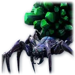
Spider Araña
Reshanta Inferior del Caos · nv 46 · 111 apariciones Chaotic Lower Reshanta · nv 46 · 111 apariciones
Insectoide mutado de Od del Abismo Abyss Odyle Mutated Insectoid Reshanta Inferior del Caos Chaotic Lower Reshanta : 111 aparicionesCofre de mascota misterioso Mysterious Pet Chest 3,9% Cofre de mascota: Feras Pet Chest: Fera 1,5% Cofre de mascota de progreso Growth Pet Chest 0,5% La tengo: Araña 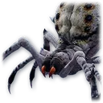
Ashen Spider Araña ceniza
Verteron · nv 18 · 14 apariciones Altgard · nv 21 · 48 apariciones
Monstruo de mazmorra Araña de lava Lava Spider Templo de Fuego Fire Temple Octaside de caparazón blanco White Shell Octaside (zona Elyos) : 14 aparicionesAraña ceniza Ashen Spider (zona Asmodian) : 48 aparicionesCofre de mascota misterioso Mysterious Pet Chest 3,9% Cofre de mascota: Feras Pet Chest: Fera 1,5% Cofre de mascota de progreso Growth Pet Chest 0,5% La tengo: Araña ceniza Aberrant Odyle Spider Araña de Od variante
Solo cofres
Cofre de mascota misterioso Mysterious Pet Chest 3,9% Cofre de mascota: Feras Pet Chest: Fera 1,5% Cofre de mascota de progreso Growth Pet Chest 0,5% La tengo: Araña de Od variante 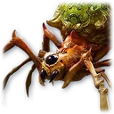
Mutated Aberrant Odyle Spider Araña de Od variante mutada
Verteron · nv 15 · 34 apariciones Altgard · nv 48 · 32 apariciones
Araña de Od de la ciénaga Marsh Odyle Spider (zona Elyos) : 34 aparicionesAraña de jardín Garden Spider (zona Elyos) : 9 aparicionesAraña de Od de la Meseta Highland Odyle Spider (zona Elyos) : 10 aparicionesAraña ceniza inestable Unstable Ashen Spider (zona Asmodian) : 32 aparicionesCofre de mascota misterioso Mysterious Pet Chest 3,9% Cofre de mascota: Feras Pet Chest: Fera 1,5% Cofre de mascota de progreso Growth Pet Chest 0,5% La tengo: Araña de Od variante mutada Withered Branch Spider Araña de rama seca
Grieta: Altgard Altgard
Altgard · nv 11-40 · 306 apariciones
Araña de rama seca Withered Branch Spider (zona Asmodian) : 306 aparicionesCofre de mascota misterioso Mysterious Pet Chest 3,9% Cofre de mascota: Feras Pet Chest: Fera 1,5% Cofre de mascota de progreso Growth Pet Chest 0,5% La tengo: Araña de rama seca 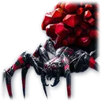
Unstable Spider Araña inestable
Verteron · nv 30 · 44 apariciones Altgard · nv 27 · 93 apariciones
Araña Od del Bosque Aullaeu Aullaeu Forest Odyle Spider (zona Elyos) : 44 aparicionesAraña rubí Crimson Spider (zona Elyos) : 33 aparicionesAraña de roca llameante Flame Rock Spider (zona Asmodian) : 93 aparicionesAraña de sangre venenosa inestable Unstable Poison Blood Spider (zona Asmodian) : 24 aparicionesInsectoide mutado rojo del Abismo Abyss Red Mutated Insectoid Reshanta Inferior del Caos Chaotic Lower Reshanta : 22 aparicionesCofre de mascota misterioso Mysterious Pet Chest 3,9% Cofre de mascota: Feras Pet Chest: Fera 1,5% Cofre de mascota de progreso Growth Pet Chest 0,5% La tengo: Araña inestable 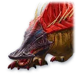
Grieta: Altgard Altgard
Altgard · nv 10 · 132 apariciones
Topo de caparazón rojo Red Shell Mole (zona Asmodian) : 132 aparicionesArmadon árido Withered Armadon (zona Asmodian) : 17 aparicionesCofre de mascota misterioso Mysterious Pet Chest 3,9% Cofre de mascota: Feras Pet Chest: Fera 1,5% Cofre de mascota de progreso Growth Pet Chest 0,5% La tengo: Armadon Aberrant Armadon Armadon mutante
Verteron Grieta: Verteron
Verteron · nv 12 · 62 apariciones
Armadon brillante Splendent Armadon (zona Elyos) : 62 aparicionesArmadon salvaje de la Meseta Highland Wild Armadon (zona Elyos) : 38 aparicionesCofre de mascota misterioso Mysterious Pet Chest 3,9% Cofre de mascota: Feras Pet Chest: Fera 1,5% Cofre de mascota de progreso Growth Pet Chest 0,5% La tengo: Armadon mutante Flame Barghest Balgest de llamas
Templo de Fuego · élite Fire Temple · élite
Monstruo de mazmorra Balgest de llamas Flame Barghest Templo de Fuego Fire Temple Monstruo de mazmorra Sagrario Barghest Sanctum Barghest Forja Abismal: Ludra Abyssal Forge: Ludra Cofre de mascota misterioso Mysterious Pet Chest 3,9% Cofre de mascota: Feras Pet Chest: Fera 1,5% Cofre de mascota de progreso Growth Pet Chest 0,5% La tengo: Balgest de llamas Grieta: Altgard Altgard
Altgard · nv 21 · 16 apariciones
Basilisk de ceniza negra Black Ash Basilisk (zona Asmodian) : 16 aparicionesCofre de mascota misterioso Mysterious Pet Chest 3,9% Cofre de mascota: Feras Pet Chest: Fera 1,5% Cofre de mascota de progreso Growth Pet Chest 0,5% La tengo: Basilisk Ashen Basilisk Basilisk cenizo
Solo cofres
Cofre de mascota misterioso Mysterious Pet Chest 3,9% Cofre de mascota: Feras Pet Chest: Fera 1,5% Cofre de mascota de progreso Growth Pet Chest 0,5% La tengo: Basilisk cenizo
Verteron · nv 32 · 51 apariciones Altgard · nv 20-33 · 40 apariciones
Brax (nv 20-33) en Altgard (zona Asmodian) : 40 aparicionesBrax de campo Field Brax (zona Elyos) : 34 aparicionesBrax famélico Hungry Brax (zona Elyos) : 39 aparicionesBrax dócil de la Meseta Docile Highland Brax (zona Elyos) : 51 aparicionesCofre de mascota misterioso Mysterious Pet Chest 3,9% Cofre de mascota: Feras Pet Chest: Fera 1,5% Cofre de mascota de progreso Growth Pet Chest 0,5% La tengo: Brax 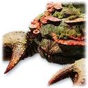
Potcrab Cantiesto
Verteron · nv 14 · 36 apariciones Altgard · nv 46-49 · 30 apariciones
Monstruo de mazmorra Cangrejo de musgo abismal Abyssal Moss Crab Caverna del Cuerno Feroz Ferocious Horn Den Cantiesto de musgo de la ciénaga Marsh Moss Potcrab (zona Elyos) : 36 aparicionesCantiesto plano Flat Potcrab (zona Elyos) : 14 aparicionesCangrejo de musgo de eternidad Eternal Moss Crab (zona Elyos) : 30 aparicionesCangrejo de musgo Moss Crab (zona Asmodian) : 26 aparicionesCangrejo de musgo costero Coastal Moss Crab (zona Asmodian) : 30 aparicionesCofre de mascota misterioso Mysterious Pet Chest 3,9% Cofre de mascota: Feras Pet Chest: Fera 1,5% Cofre de mascota de progreso Growth Pet Chest 0,5% La tengo: Cantiesto Aberrant Potcrab Cantiesto mutante
Verteron Grieta: Verteron
Verteron · nv 41 · 26 apariciones
Cantiesto mutante de Drana Drana Mutated Potcrab (zona Elyos) : 26 aparicionesCangrejo de musgo rubí Eternal Moss Crab (zona Elyos) : 7 aparicionesCofre de mascota misterioso Mysterious Pet Chest 3,9% Cofre de mascota: Feras Pet Chest: Fera 1,5% Cofre de mascota de progreso Growth Pet Chest 0,5% La tengo: Cantiesto mutante
Solo cofres
Cofre de mascota misterioso Mysterious Pet Chest 3,9% Cofre de mascota: Feras Pet Chest: Fera 1,5% Cofre de mascota de progreso Growth Pet Chest 0,5% La tengo: Coradon 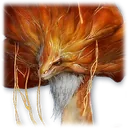
Eternal Coradon Coradon de eternidad
Reshanta Inferior del Caos · nv 48 · 16 apariciones Chaotic Lower Reshanta · nv 48 · 16 apariciones Altgard · nv 40 · 20 apariciones
Monstruo de mazmorra Coradon del bosque Forest Coradon Isla Aérea de Vakron Vakron Sky Island Coradon de eternidad Eternal Coradon (zona Asmodian) : 20 aparicionesCoradon del Abismo Abyss Coradon Reshanta Inferior del Caos Chaotic Lower Reshanta : 16 aparicionesCofre de mascota misterioso Mysterious Pet Chest 3,9% Cofre de mascota: Feras Pet Chest: Fera 1,5% Cofre de mascota de progreso Growth Pet Chest 0,5% La tengo: Coradon de eternidad 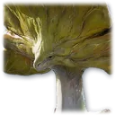
Aberrant Coradon Coradon mutante
Verteron · nv 39 · 67 apariciones Altgard · nv 20-33 · 18 apariciones
Coradon mutante Aberrant Coradon (zona Asmodian) : 18 aparicionesCoradon del Jardín Garden Coradon (zona Elyos) : 16 aparicionesCoradon de la colina Hill Coradon (zona Elyos) : 67 aparicionesCofre de mascota misterioso Mysterious Pet Chest 3,9% Cofre de mascota: Feras Pet Chest: Fera 1,5% Cofre de mascota de progreso Growth Pet Chest 0,5% La tengo: Coradon mutante 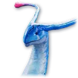
Verteron · nv 49 · 26 apariciones Altgard · nv 29 · 25 apariciones
Crasaur de escamas de agua Aquascale Crasaur (zona Elyos) : 15 aparicionesCrasaur dócil Docile Crasaur (zona Elyos) : 5 aparicionesCrasaur de eternidad Eternal Crasaur (zona Elyos) : 26 aparicionesCrasaur sensible Sensitive Crasaur (zona Asmodian) : 25 aparicionesCrasaur (nv 49) en Altgard (zona Asmodian) : 17 aparicionesCofre de mascota misterioso Mysterious Pet Chest 3,9% Cofre de mascota: Feras Pet Chest: Fera 1,5% Cofre de mascota de progreso Growth Pet Chest 0,5% La tengo: Crasaur Verteron Grieta: Verteron
Verteron · nv 11 · 53 apariciones
Crestlich pico de piedra Stonebeak Crestlich (zona Elyos) : 53 aparicionesCrestlich hembra de del Río Ellun Ellun River Crestlich Female (zona Elyos) : 29 aparicionesCrestlich hembra de la Meseta Highland Crestlich Female (zona Elyos) : 41 aparicionesCofre de mascota misterioso Mysterious Pet Chest 3,9% Cofre de mascota: Feras Pet Chest: Fera 1,5% Cofre de mascota de progreso Growth Pet Chest 0,5% La tengo: Crestlich 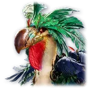
Male Crestlich Crestlich macho
Verteron Grieta: Verteron
Verteron · nv 18 · 12 apariciones
Crestlich macho de del Río Ellun Ellun River Crestlich Male (zona Elyos) : 12 aparicionesCrestlich macho de la Meseta Highland Crestlich Male (zona Elyos) : 11 aparicionesCofre de mascota misterioso Mysterious Pet Chest 3,9% Cofre de mascota: Feras Pet Chest: Fera 1,5% Cofre de mascota de progreso Growth Pet Chest 0,5% La tengo: Crestlich macho Baby Odyle Spider Cría de araña de Od
Verteron Grieta: Verteron
Verteron · nv 16 · 8 apariciones
Araña de Od costera Coastal Odyle Spider (zona Elyos) : 8 aparicionesCofre de mascota misterioso Mysterious Pet Chest 3,9% Cofre de mascota: Feras Pet Chest: Fera 1,5% Cofre de mascota de progreso Growth Pet Chest 0,5% La tengo: Cría de araña de Od 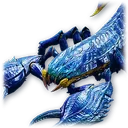
Scorpion Escorpión
Verteron · nv 36 · 46 apariciones Altgard · nv 35 · 19 apariciones
Escorpión contaminado Contaminated Scorpion (zona Elyos) : 46 aparicionesEscorpión mineral Ore Scorpion (zona Asmodian) : 19 aparicionesCofre de mascota misterioso Mysterious Pet Chest 3,9% Cofre de mascota: Feras Pet Chest: Fera 1,5% Cofre de mascota de progreso Growth Pet Chest 0,5% La tengo: Escorpión 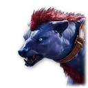
Verteron · nv 25 · 9 apariciones Altgard · nv 34 · 35 apariciones
Fossa patrullando Patrolling Fossa (zona Elyos) : 9 aparicionesFossa de Daeva renegado Daeva Renegade Fossa (zona Asmodian) : 9 aparicionesBestia domesticada Tamed Beast (zona Asmodian) : 35 aparicionesCofre de mascota misterioso Mysterious Pet Chest 3,9% Cofre de mascota: Feras Pet Chest: Fera 1,5% Cofre de mascota de progreso Growth Pet Chest 0,5% La tengo: Fossa Cadaver Insectoid Insectoide cadáver
Grieta: Altgard Altgard
Altgard · nv 12 · 16 apariciones
Gusano cadáver de Drana Drana Cadaver Insectoid (zona Asmodian) : 16 aparicionesCofre de mascota misterioso Mysterious Pet Chest 3,9% Cofre de mascota: Feras Pet Chest: Fera 1,5% Cofre de mascota de progreso Growth Pet Chest 0,5% La tengo: Insectoide cadáver 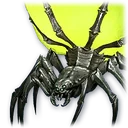
Mutated Cadaver Insectoid Insectoide cadáver mutado
Verteron Grieta: Verteron
Verteron · nv 27 · 35 apariciones
Araña de la cuesta Ridge Spider (zona Elyos) : 35 aparicionesCofre de mascota misterioso Mysterious Pet Chest 3,9% Cofre de mascota: Feras Pet Chest: Fera 1,5% Cofre de mascota de progreso Growth Pet Chest 0,5% La tengo: Insectoide cadáver mutado Venomous Insect Sram Insectoide de veneno mortal Sram
Solo cofres
Cofre de mascota misterioso Mysterious Pet Chest 3,9% Cofre de mascota: Feras Pet Chest: Fera 1,5% Cofre de mascota de progreso Growth Pet Chest 0,5% La tengo: Insectoide de veneno mortal Sram 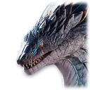
Verteron · nv 18 · 37 apariciones Altgard · nv 20-32 · 84 apariciones
Kailin del Río Ellun Ellun River Kailin (zona Elyos) : 37 aparicionesKailin inestable Unstable Kailin (zona Asmodian) : 16 aparicionesKailin (nv 20-32) en Altgard (zona Asmodian) : 84 aparicionesCofre de mascota misterioso Mysterious Pet Chest 3,9% Cofre de mascota: Feras Pet Chest: Fera 1,5% Cofre de mascota de progreso Growth Pet Chest 0,5% La tengo: Kailin 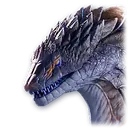
Young Kailin Kailin joven
Verteron · nv 18 · 25 apariciones Altgard · nv 20-32 · 94 apariciones
Kailin joven del Río Ellun Ellun River Young Kailin (zona Elyos) : 25 aparicionesKailin joven inestable Unstable Young Kailin (zona Asmodian) : 22 aparicionesKailin joven Young Kailin (zona Asmodian) : 94 aparicionesCofre de mascota misterioso Mysterious Pet Chest 3,9% Cofre de mascota: Feras Pet Chest: Fera 1,5% Cofre de mascota de progreso Growth Pet Chest 0,5% La tengo: Kailin joven 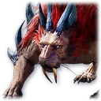
Verteron Grieta: Verteron
Verteron · nv 32 · 64 apariciones
Karnif feroz Ferocious Karnif (zona Elyos) : 6 aparicionesKarnif de Tolbas Tolbas Karnif (zona Elyos) : 8 aparicionesKarnif atroz de Tolbas Ferocious Tolbas Karnif (zona Elyos) : 9 aparicionesKarnif de melena resistente de la Meseta Toughmane Highland Karnif (zona Elyos) : 64 aparicionesKarnif de la Meseta Highland Karnif (zona Elyos) : 46 aparicionesKarnif domesticado Tamed Karnif (zona Elyos) : 60 aparicionesCofre de mascota misterioso Mysterious Pet Chest 3,9% Cofre de mascota: Feras Pet Chest: Fera 1,5% Cofre de mascota de progreso Growth Pet Chest 0,5% La tengo: Karnif Tamed Karnif Karnif domesticado
Grieta: Altgard Altgard
Altgard · nv 37 · 56 apariciones
Karnif de la Legión de la Cuchilla Blades Karnif (zona Asmodian) : 8 aparicionesBestia domesticada de la Legión de la Cuchilla Tamed Blades Beast (zona Asmodian) : 56 aparicionesCofre de mascota misterioso Mysterious Pet Chest 3,9% Cofre de mascota: Feras Pet Chest: Fera 1,5% Cofre de mascota de progreso Growth Pet Chest 0,5% La tengo: Karnif domesticado 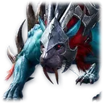
Modified Karnif Karnif modificado
Piso Exterior de la Reshanta del Caos · nv 46 · 46 apariciones Chaotic Outer Reshanta · nv 46 · 46 apariciones
Karnif patrulla Scouting Karnif (zona Elyos) : 5 aparicionesKarnif violento Unruly Karnif (zona Elyos) : 5 aparicionesKarnif adiestrado Trained Karnif (zona Elyos) : 6 aparicionesKarnif sensible Sensitive Karnif (zona Elyos) : 3 aparicionesKarnif del Abismo Abyss Karnif Reshanta Inferior del Caos Chaotic Lower Reshanta : 23 aparicionesKarnif del escuadrón de reconocimiento del Abismo Abyss Search Party Karnif Reshanta Inferior del Caos Chaotic Lower Reshanta : 23 aparicionesKrall Karnif de Chandala Chandala Krall Karnif Piso Exterior de la Reshanta del Caos Chaotic Outer Reshanta : 46 aparicionesKrall Karnif de Makarah Makarah Krall Karnif Piso Exterior de la Reshanta del Caos Chaotic Outer Reshanta : 46 aparicionesCofre de mascota misterioso Mysterious Pet Chest 3,9% Cofre de mascota: Feras Pet Chest: Fera 1,5% Cofre de mascota de progreso Growth Pet Chest 0,5% La tengo: Karnif modificado 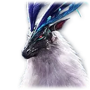
Elite Keneire Keneire élite
Solo cofres
Cofre de mascota misterioso Mysterious Pet Chest 3,9% Cofre de mascota: Feras Pet Chest: Fera 1,5% Cofre de mascota de progreso Growth Pet Chest 0,5% La tengo: Keneire élite Verteron Grieta: Verteron
Verteron · nv 34 · 31 apariciones
Lupyllini de cola emplumada Tail Feather Lupyllini (zona Elyos) : 31 aparicionesCofre de mascota misterioso Mysterious Pet Chest 3,9% Cofre de mascota: Feras Pet Chest: Fera 1,5% Cofre de mascota de progreso Growth Pet Chest 0,5% La tengo: Lupyllini Ashen Lupyllini Lupyllini cenizo
Solo cofres
Cofre de mascota misterioso Mysterious Pet Chest 3,9% Cofre de mascota: Feras Pet Chest: Fera 1,5% Cofre de mascota de progreso Growth Pet Chest 0,5% La tengo: Lupyllini cenizo 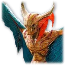
Cave Bat Murciélago de cueva
Verteron Grieta: Verteron
Verteron · nv 41 · 11 apariciones
Murciélago mutante de Drana Drana Mutated Bat (zona Elyos) : 11 aparicionesCofre de mascota misterioso Mysterious Pet Chest 3,9% Cofre de mascota: Feras Pet Chest: Fera 1,5% Cofre de mascota de progreso Growth Pet Chest 0,5% La tengo: Murciélago de cueva 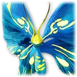
Papis Paphis
Verteron · nv 10 · 117 apariciones Altgard · nv 11-40 · 396 apariciones
Paphis desgastado Faded Papis (zona Asmodian) : 396 aparicionesPaphis dócil Gentle Papis (zona Elyos) : 117 aparicionesPaphis del Río Ellun Ellun River Papis (zona Elyos) : 86 aparicionesPaphis del jardín Garden Papis (zona Elyos) : 28 aparicionesAnticipado: Cofre de selección de mascota Advance: Pet Selection Chest Cofre de mascota misterioso Mysterious Pet Chest 3,9% Registro previo: Cofre de mascota Pre-Registration: Pet Selection Chest Cofre de mascota: Feras Pet Chest: Fera 1,5% Cofre de mascota de progreso Growth Pet Chest 0,5% La tengo: Paphis Drakan Guard Dog Perro guardián Drakan
Reshanta Inferior del Caos · nv 47 · 22 apariciones Chaotic Lower Reshanta · nv 47 · 22 apariciones
Perro guardián de Drakan Drakan Guard Dog (zona Elyos) : 20 aparicionesPerro guardián de Drakan de Nahid Nahid Drakan Guard Dog (zona Elyos) : 16 aparicionesPerro guardián de Drakan Drakan Guard Dog (zona Asmodian) : 3 aparicionesDrakan bestia armada de unidad de patrulla Drakan Patrol Armed Beast (zona Asmodian) : 7 aparicionesPerro guardián de la Brigada de Lagta Lagta Brigade Guard Dog (zona Asmodian) : 7 aparicionesDrakan bestia exploradora del Abismo Abyss Drakan Scout Beast Reshanta Inferior del Caos Chaotic Lower Reshanta : 22 aparicionesCofre de mascota misterioso Mysterious Pet Chest 3,9% Cofre de mascota: Feras Pet Chest: Fera 1,5% Cofre de mascota de progreso Growth Pet Chest 0,5% La tengo: Perro guardián Drakan Grave Rat Rata de tumba
Solo cofres
Cofre de mascota misterioso Mysterious Pet Chest 3,9% Cofre de mascota: Feras Pet Chest: Fera 1,5% Cofre de mascota de progreso Growth Pet Chest 0,5% La tengo: Rata de tumba Giant Bee Rey abeja
Verteron o mazmorra Grieta o mazmorra
Verteron · nv 27 · 14 apariciones
Monstruo de mazmorra Abeja reina feroz Ferocious Queen Bee Isla Aérea de Vakron Vakron Sky Island Abeja de rayas gigante Giant Stripe Bee (zona Elyos) : 14 aparicionesCofre de mascota misterioso Mysterious Pet Chest 3,9% Cofre de mascota: Feras Pet Chest: Fera 1,5% Cofre de mascota de progreso Growth Pet Chest 0,5% La tengo: Rey abeja Verteron Grieta: Verteron
Verteron · nv 14 · 25 apariciones
Skama fétido Foul Skama (zona Elyos) : 25 aparicionesSkama del lago Lake Skama (zona Elyos) : 16 aparicionesSkama mutante de Drana Drana Mutated Skama (zona Elyos) : 8 aparicionesCofre de mascota misterioso Mysterious Pet Chest 3,9% Cofre de mascota: Feras Pet Chest: Fera 1,5% Cofre de mascota de progreso Growth Pet Chest 0,5% La tengo: Skama 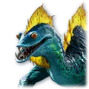
Aberrant Skama Skama mutante
Reshanta Inferior del Caos · nv 46 · 37 apariciones Chaotic Lower Reshanta · nv 46 · 37 apariciones
Skama de cola amarilla Yellow-Tailed Skama (zona Elyos) : 30 aparicionesSkama de azufre del Abismo Abyss Sulfur Skama Reshanta Inferior del Caos Chaotic Lower Reshanta : 37 aparicionesSkama de Drana del Abismo Abyss Drana Skama Piso Exterior de la Reshanta del Caos Chaotic Outer Reshanta : 18 aparicionesCofre de mascota misterioso Mysterious Pet Chest 3,9% Cofre de mascota: Feras Pet Chest: Fera 1,5% Cofre de mascota de progreso Growth Pet Chest 0,5% La tengo: Skama mutante 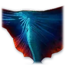
Verteron · nv 27 · 20 apariciones Altgard · nv 20 · 13 apariciones
Skyray del bosque pequeño Small Forest Skyray (zona Elyos) : 11 aparicionesSkyray de la cascada del Río Ellun Ellun River Falls Skyray (zona Elyos) : 11 aparicionesSkyray del lago del Bosque de Tolbas Tolbas Forest Lake Skyray (zona Elyos) : 18 aparicionesSkyray de la cuesta Ridge Skyray (zona Elyos) : 20 aparicionesSkyray del cañón Canyon Skyray (zona Elyos) : 5 aparicionesSkyray del lago del cañón Canyon Lake Skyray (zona Elyos) : 8 aparicionesSkyray del estanque Pond Skyray (zona Elyos) : 17 aparicionesSkyray del lago del Río Ellun Ellun River Lake Skyray (zona Elyos) : 7 aparicionesSkyray del Valle de Kantas Cantas Valley Skyray (zona Elyos) : 14 aparicionesSkyray del Lago Lake Skyray (zona Elyos) : 13 aparicionesSkyray de Tranein Tranein Skyray (zona Asmodian) : 13 aparicionesSkyray del Lago Lake Skyray (zona Asmodian) : 13 aparicionesCofre de mascota misterioso Mysterious Pet Chest 3,9% Cofre de mascota: Feras Pet Chest: Fera 1,5% Cofre de mascota de progreso Growth Pet Chest 0,5% La tengo: Skyray 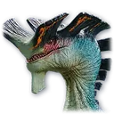
Reshanta Inferior del Caos · nv 47 · 38 apariciones Chaotic Lower Reshanta · nv 47 · 38 apariciones Altgard · nv 37-49 · 45 apariciones
Slink de Tolbas Tolbas Slink (zona Elyos) : 32 aparicionesSlink del pantano Wetland Slink (zona Elyos) : 32 aparicionesSlink de eternidad Eternal Slink (zona Elyos) : 24 aparicionesSlink costero Coastal Slink (zona Asmodian) : 45 aparicionesSlink (nv 20-40) en Altgard (zona Asmodian) : 34 aparicionesSlink del Abismo Abyss Slink Reshanta Inferior del Caos Chaotic Lower Reshanta : 38 aparicionesCofre de mascota misterioso Mysterious Pet Chest 3,9% Cofre de mascota: Feras Pet Chest: Fera 1,5% Cofre de mascota de progreso Growth Pet Chest 0,5% La tengo: Slink 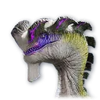
Young Slink Slink joven
Verteron · nv 18 · 25 apariciones Altgard · nv 20-40 · 35 apariciones
Slink joven del pantano Young Wetland Slink (zona Elyos) : 25 aparicionesSlink joven de Tolbas Tolbas Young Slink (zona Elyos) : 12 aparicionesSlink joven Young Slink (zona Asmodian) : 35 aparicionesSlink joven del Abismo Abyss Young Slink Reshanta Inferior del Caos Chaotic Lower Reshanta : 6 aparicionesCofre de mascota misterioso Mysterious Pet Chest 3,9% Cofre de mascota: Feras Pet Chest: Fera 1,5% Cofre de mascota de progreso Growth Pet Chest 0,5% La tengo: Slink joven 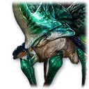
Verteron Grieta: Verteron
Verteron · nv 32-33 · 146 apariciones
Sparkie salvaje Wild Sparkie (zona Elyos) : 10 aparicionesSparkie de la pradera Meadow Sparkie (zona Elyos) : 75 aparicionesSparkie de Od de la Meseta Highland Odyle Sparkie (zona Elyos) : 146 aparicionesSparkie del Bosque Aullaeu Aullaeu Forest Sparkie (zona Elyos) : 19 aparicionesSparkie de tierras altas Highland Sparkie (zona Elyos) : 28 aparicionesCofre de mascota misterioso Mysterious Pet Chest 3,9% Cofre de mascota: Feras Pet Chest: Fera 1,5% Cofre de mascota de progreso Growth Pet Chest 0,5% La tengo: Sparkie 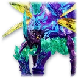
Giant Sparkie Sparkie gigante
Verteron · nv 13 · 70 apariciones Altgard · nv 30 · 32 apariciones
Sparkie de la colina brillante Splendent Hill Sparkie (zona Elyos) : 70 aparicionesSparkie de Od gigante de la Meseta Highland Giant Odyle Sparkie (zona Elyos) : 22 aparicionesSparkie gigante del Bosque Aullaeu Aullaeu Forest Giant Sparkie (zona Elyos) : 63 aparicionesSparkie gigante de tierras altas Highland Giant Sparkie (zona Elyos) : 18 aparicionesSparkie de Od de rama seca Withered Branch Odyle Sparkie (zona Asmodian) : 32 aparicionesSparkie luminoso de Fafnite Fafnite Luminous Sparkie (zona Asmodian) : 22 aparicionesCofre de mascota misterioso Mysterious Pet Chest 3,9% Cofre de mascota: Feras Pet Chest: Fera 1,5% Cofre de mascota de progreso Growth Pet Chest 0,5% La tengo: Sparkie gigante 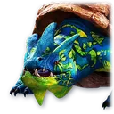
Verteron · nv 39 · 33 apariciones Altgard · nv 37-49 · 48 apariciones
Starturtle costera Coastal Starturtle (zona Elyos) : 29 aparicionesStarturtle del estanque Pond Starturtle (zona Elyos) : 33 aparicionesStarturtle de eternidad Eternal Starturtle (zona Elyos) : 28 aparicionesStarturtle de la playa Beach Starturtle (zona Asmodian) : 9 aparicionesStarturtle (nv 37-49) en Altgard (zona Asmodian) : 48 aparicionesCofre de mascota misterioso Mysterious Pet Chest 3,9% Cofre de mascota: Feras Pet Chest: Fera 1,5% Cofre de mascota de progreso Growth Pet Chest 0,5% La tengo: Starturtle 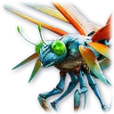
Verteron · nv 32 · 92 apariciones Altgard · nv 32 · 39 apariciones
Sylphen de tierras altas Highland Sylphen (zona Elyos) : 9 aparicionesSylphen del Río Ellun Ellun River Sylphen (zona Elyos) : 81 aparicionesSylphen mutante Aberrant Sylphen (zona Elyos) : 14 aparicionesSylphen de la cuesta Ridge Sylphen (zona Elyos) : 28 aparicionesSylphen de la Meseta Highland Sylphen (zona Elyos) : 92 aparicionesSylphen (nv 32) en Altgard (zona Asmodian) : 39 aparicionesCofre de mascota misterioso Mysterious Pet Chest 3,9% Cofre de mascota: Feras Pet Chest: Fera 1,5% Cofre de mascota de progreso Growth Pet Chest 0,5% La tengo: Sylphen Grieta: Altgard Altgard
Altgard · nv 41 · 65 apariciones
Tayga del escuadrón de reconocimiento Search Party Tayga (zona Asmodian) : 13 aparicionesTayga de la unidad de guarda Guard Troopers Tayga (zona Asmodian) : 12 aparicionesTayga domesticado Tamed Tayga (zona Asmodian) : 65 aparicionesCofre de mascota misterioso Mysterious Pet Chest 3,9% Cofre de mascota: Feras Pet Chest: Fera 1,5% Cofre de mascota de progreso Growth Pet Chest 0,5% La tengo: Tayga Grieta: Altgard Altgard
Altgard · nv 18 · 10 apariciones
Tog (nv 18) en Altgard (zona Asmodian) : 10 aparicionesCofre de mascota misterioso Mysterious Pet Chest 3,9% Cofre de mascota: Feras Pet Chest: Fera 1,5% Cofre de mascota de progreso Growth Pet Chest 0,5% La tengo: Tog Young Tog Tog joven
Solo cofres
Cofre de mascota misterioso Mysterious Pet Chest 3,9% Cofre de mascota: Feras Pet Chest: Fera 1,5% Cofre de mascota de progreso Growth Pet Chest 0,5% La tengo: Tog joven Aberrant Tog Tog mutante
Verteron · nv 13 · 105 apariciones Altgard · nv 32 · 48 apariciones
Tog del montículo Cairn Tog (zona Elyos) : 105 aparicionesTog hambriento Hungry Tog (zona Elyos) : 24 aparicionesTog de campo Field Tog (zona Elyos) : 32 aparicionesTog de rayas salvaje Wild Stripe Tog (zona Elyos) : 31 aparicionesTog de la colina Hill Tog (zona Elyos) : 84 aparicionesTog mutante Aberrant Tog (zona Asmodian) : 48 aparicionesCofre de mascota misterioso Mysterious Pet Chest 3,9% Cofre de mascota: Feras Pet Chest: Fera 1,5% Cofre de mascota de progreso Growth Pet Chest 0,5% La tengo: Tog mutante
Verteron · nv 25 · 41 apariciones Altgard · nv 17-32 · 16 apariciones
Ursus de cuerno duro Hardhorn Ursus (zona Elyos) : 41 aparicionesUrsus de la cuesta Ridge Ursus (zona Elyos) : 12 aparicionesUrsus feroz de la cuesta Ridge Violent Ursus (zona Elyos) : 10 aparicionesUrsus confundido Confused Ursus (zona Elyos) : 20 aparicionesUrsus de la colina Hill Ursus (zona Elyos) : 25 aparicionesUrsus (nv 17-32) en Altgard (zona Asmodian) : 16 aparicionesCofre de mascota misterioso Mysterious Pet Chest 3,9% Cofre de mascota: Feras Pet Chest: Fera 1,5% Cofre de mascota de progreso Growth Pet Chest 0,5% La tengo: Ursus Young Ursus Ursus joven
Verteron · nv 39 · 25 apariciones Altgard · nv 17-32 · 28 apariciones
Cría de Ursus de cuerno Baby Horn Ursus (zona Elyos) : 11 aparicionesUrsus joven de la colina Hill Young Ursus (zona Elyos) : 25 aparicionesUrsus joven Young Ursus (zona Asmodian) : 28 aparicionesCofre de mascota misterioso Mysterious Pet Chest 3,9% Cofre de mascota: Feras Pet Chest: Fera 1,5% Cofre de mascota de progreso Growth Pet Chest 0,5% La tengo: Ursus joven Mutated Ursus Ursus mutado
Grieta: Altgard Altgard
Altgard · nv 21 · 18 apariciones
Ursus cenizo Ashen Ursus (zona Asmodian) : 18 aparicionesCofre de mascota misterioso Mysterious Pet Chest 3,9% Cofre de mascota: Feras Pet Chest: Fera 1,5% Cofre de mascota de progreso Growth Pet Chest 0,5% La tengo: Ursus mutado 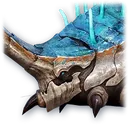
Mutated Insectoid Valka Valka mutante
Solo cofres
Cofre de mascota misterioso Mysterious Pet Chest 3,9% Cofre de mascota: Feras Pet Chest: Fera 1,5% Cofre de mascota de progreso Growth Pet Chest 0,5% La tengo: Valka mutante 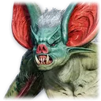
Verteron · nv 32 · 50 apariciones Altgard · nv 14 · 71 apariciones
Vivel de la Meseta Highland Vivel (zona Elyos) : 50 aparicionesVivel vampiro Vampire Vivel (zona Asmodian) : 71 aparicionesCofre de mascota misterioso Mysterious Pet Chest 3,9% Cofre de mascota: Feras Pet Chest: Fera 1,5% Cofre de mascota de progreso Growth Pet Chest 0,5% La tengo: Vivel Verteron Grieta: Verteron
Verteron · nv 40 · 60 apariciones
Zaif de la Colina Rocosa Rock Hill Zaif (zona Elyos) : 8 aparicionesZaif del bosque de la Meseta Highland Forest Zaif (zona Elyos) : 27 aparicionesZaif de la Meseta Highland Zaif (zona Elyos) : 57 aparicionesZaif de la colina Hill Zaif (zona Elyos) : 60 aparicionesCofre de mascota misterioso Mysterious Pet Chest 3,9% Registro previo: Cofre de mascota Pre-Registration: Pet Selection Chest Cofre de mascota: Feras Pet Chest: Fera 1,5% Cofre de mascota de progreso Growth Pet Chest 0,5% La tengo: Zaif 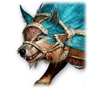
Tamed Zaif Zaif domesticado
Verteron Grieta: Verteron
Verteron · nv 27 · 3 apariciones
Zaif de la Banda de saqueadores Marauders Zaif (zona Elyos) : 3 aparicionesCofre de mascota misterioso Mysterious Pet Chest 3,9% Cofre de mascota: Feras Pet Chest: Fera 1,5% Cofre de mascota de progreso Growth Pet Chest 0,5% La tengo: Zaif domesticado 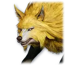
Aberrant Zaif Zaif mutante
Verteron · nv 27 · 19 apariciones Altgard · nv 40 · 19 apariciones
Zaif de melena amarilla Yellow-Maned Zaif (zona Elyos) : 19 aparicionesZaif dorado Golden Zaif (zona Asmodian) : 19 aparicionesCofre de mascota misterioso Mysterious Pet Chest 3,9% Cofre de mascota: Feras Pet Chest: Fera 1,5% Cofre de mascota de progreso Growth Pet Chest 0,5% La tengo: Zaif mutante Aullaeu Shaman Aullaeu brujo
Verteron o mazmorra Grieta o mazmorra
Verteron · nv 27 · 15 apariciones
Monstruo de mazmorra Urugugu mago Urugugu Mage Cañón de Urugugu Urugugu Canyon Aullaeu aprendiz de brujo Aullaeu Apprentice Shaman (zona Elyos) : 15 aparicionesCofre de mascota misterioso Mysterious Pet Chest 3,9% Cofre de mascota: Cognis Pet Chest: Cogni 2,4% Cofre de mascota de progreso Growth Pet Chest 0,5% La tengo: Aullaeu brujo 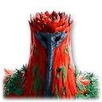
Verteron · nv 26 · 9 apariciones Altgard · nv 17 · 4 apariciones
Biruta errante Biruta Wanderer (zona Elyos) : 9 aparicionesBiruta errante Biruta Wanderer (zona Asmodian) : 4 aparicionesCofre de mascota misterioso Mysterious Pet Chest 3,9% Cofre de mascota: Cognis Pet Chest: Cogni 2,4% Cofre de mascota de progreso Growth Pet Chest 0,5% La tengo: Biruta 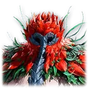
Biruta Herbalist Biruta herbolario
Grieta: Altgard Altgard
Altgard · nv 17 · 4 apariciones
Biruta herbolario Biruta Herbalist (zona Asmodian) : 4 aparicionesCofre de mascota misterioso Mysterious Pet Chest 3,9% Cofre de mascota: Cognis Pet Chest: Cogni 2,4% Cofre de mascota de progreso Growth Pet Chest 0,5% La tengo: Biruta herbolario 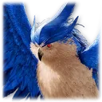
Aultross's Doppelganger Clon de Aultross
Solo cofres
Cofre de mascota misterioso Mysterious Pet Chest 3,9% Cofre de mascota: Cognis Pet Chest: Cogni 2,4% Cofre de mascota de progreso Growth Pet Chest 0,5% La tengo: Clon de Aultross 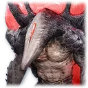
Dracuni Herbalist Dracuni herbolario
Verteron · nv 41 · 44 apariciones Altgard · nv 47 · 33 apariciones
Dracuni obrero de procesamiento Dracuni Processing Laborer (zona Elyos) : 44 aparicionesRecolector de sangre venenosa Poison Blood Gatherer (zona Asmodian) : 33 aparicionesCofre de mascota misterioso Mysterious Pet Chest 3,9% Cofre de mascota: Cognis Pet Chest: Cogni 2,4% Cofre de mascota de progreso Growth Pet Chest 0,5% La tengo: Dracuni herbolario Drakan Watcher Drakan vigilante
Verteron · nv 42 · 23 apariciones Altgard · nv 40 · 24 apariciones
Drakan explorador de la zona de procesamiento Processing Facility Drakan Scout (zona Elyos) : 23 aparicionesDrakan administrador Drakan Manager (zona Asmodian) : 8 aparicionesDrakan vigilante de unidad de patrulla Drakan Patrol Watcher (zona Asmodian) : 24 aparicionesCofre de mascota misterioso Mysterious Pet Chest 3,9% Cofre de mascota: Cognis Pet Chest: Cogni 2,4% Cofre de mascota de progreso Growth Pet Chest 0,5% La tengo: Drakan vigilante
Verteron · nv 41 · 32 apariciones Altgard · nv 19 · 95 apariciones
Dratona del Bosque Rojo Scarlet Forest Dratona (zona Elyos) : 32 aparicionesDratona peón Dratona Tinkerer (zona Asmodian) : 95 aparicionesDratona soldado de apoyo Dratona Supporter (zona Asmodian) : 25 aparicionesDratona (nv 32) en Altgard (zona Asmodian) : 38 aparicionesCofre de mascota misterioso Mysterious Pet Chest 3,9% Cofre de mascota: Cognis Pet Chest: Cogni 2,4% Cofre de mascota de progreso Growth Pet Chest 0,5% La tengo: Dratona Dratona Tinkerer Dratona peón
Solo cofres
Cofre de mascota misterioso Mysterious Pet Chest 3,9% Cofre de mascota: Cognis Pet Chest: Cogni 2,4% Cofre de mascota de progreso Growth Pet Chest 0,5% La tengo: Dratona peón 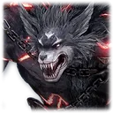
Furious Feruk Feruk frenético
Solo cofres
Cofre de mascota misterioso Mysterious Pet Chest 3,9% Cofre de mascota: Cognis Pet Chest: Cogni 2,4% Cofre de mascota de progreso Growth Pet Chest 0,5% La tengo: Feruk frenético 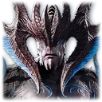
Nagarant Guardian Warrior Guardián guerrero Nagarant
Piso Exterior de la Reshanta del Caos · nv 47 · 12 apariciones Chaotic Outer Reshanta · nv 47 · 12 apariciones
Monstruo de mazmorra Guardián guerrero Nagarant Nagarant Guardian Warrior Nagarant contendiente del Abismo Abyss Nagarant Brawler Reshanta Inferior del Caos Chaotic Lower Reshanta : 9 aparicionesNagarant guerrero del Abismo Abyss Nagarant Warrior Reshanta Inferior del Caos Chaotic Lower Reshanta : 5 aparicionesNagarant pretoriano de Unavarun Unavarun Nagarant Praetorian Piso Exterior de la Reshanta del Caos Chaotic Outer Reshanta : 12 aparicionesCofre de mascota misterioso Mysterious Pet Chest 3,9% Cofre de mascota: Cognis Pet Chest: Cogni 2,4% Cofre de mascota de progreso Growth Pet Chest 0,5% La tengo: Guardián guerrero Nagarant
Verteron · nv 49 · 105 apariciones Altgard · nv 49 · 94 apariciones
Kerubar eterno Eternal Kerubar (zona Elyos) : 105 aparicionesKerubar (nv 49) en Altgard (zona Asmodian) : 94 aparicionesCofre de mascota misterioso Mysterious Pet Chest 3,9% Cofre de mascota: Cognis Pet Chest: Cogni 2,4% Cofre de mascota de progreso Growth Pet Chest 0,5% La tengo: Kerubar
Verteron · nv 49 · 65 apariciones Altgard · nv 49 · 28 apariciones
Kerubian de eternidad Eternal Kerubian (zona Elyos) : 65 aparicionesKerubian (nv 49) en Altgard (zona Asmodian) : 28 aparicionesCofre de mascota misterioso Mysterious Pet Chest 3,9% Cofre de mascota: Cognis Pet Chest: Cogni 2,4% Cofre de mascota de progreso Growth Pet Chest 0,5% La tengo: Kerubian
Verteron · nv 49 · 55 apariciones Altgard · nv 49 · 39 apariciones
Kerubiel de eternidad Eternal Kerubiel (zona Elyos) : 55 aparicionesKerubiel (nv 49) en Altgard (zona Asmodian) : 39 aparicionesCofre de mascota misterioso Mysterious Pet Chest 3,9% Cofre de mascota: Cognis Pet Chest: Cogni 2,4% Cofre de mascota de progreso Growth Pet Chest 0,5% La tengo: Kerubiel
Reshanta Inferior del Caos · nv 46 · 50 apariciones Chaotic Lower Reshanta · nv 46 · 50 apariciones
Monstruo de mazmorra Klaw limpiador Klaw Janitor Klaw deambulante Wandering Klaw (zona Elyos) : 28 aparicionesMutación de Klaw del Abismo Abyss Klaw Mutant Reshanta Inferior del Caos Chaotic Lower Reshanta : 50 aparicionesKlaw mutado del Abismo Abyss Mutated Klaw Piso Exterior de la Reshanta del Caos Chaotic Outer Reshanta : 30 aparicionesCofre de mascota misterioso Mysterious Pet Chest 3,9% Cofre de mascota: Cognis Pet Chest: Cogni 2,4% Cofre de mascota de progreso Growth Pet Chest 0,5% La tengo: Klaw 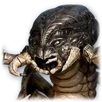
Elite Klaw Klaw élite
Verteron · nv 45 · 1 aparición
Jefe de campo Guardia Teegant Bodyguard Teegant (zona Elyos) Cofre de mascota misterioso Mysterious Pet Chest 3,9% Cofre de mascota: Cognis Pet Chest: Cogni 2,4% Cofre de mascota de progreso Growth Pet Chest 0,5% La tengo: Klaw élite 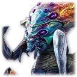
Klaw Scout Klaw explorador
Piso Exterior de la Reshanta del Caos · nv 46 · 112 apariciones Chaotic Outer Reshanta · nv 46 · 112 apariciones
Klaw infestado Consumed Klaw (zona Asmodian) : 36 aparicionesKlaw del Abismo Abyss Klaw Reshanta Inferior del Caos Chaotic Lower Reshanta : 28 aparicionesKlaw mutante del Abismo Abyss Aberrant Klaw Reshanta Inferior del Caos Chaotic Lower Reshanta : 28 aparicionesKlaw del Abismo Abyss Klaw Piso Exterior de la Reshanta del Caos Chaotic Outer Reshanta : 112 aparicionesCofre de mascota misterioso Mysterious Pet Chest 3,9% Cofre de mascota: Cognis Pet Chest: Cogni 2,4% Cofre de mascota de progreso Growth Pet Chest 0,5% La tengo: Klaw explorador Krall Warshaman Krall chamán
Verteron o mazmorra Grieta o mazmorra
Verteron · nv 41 · 32 apariciones
Monstruo de mazmorra Krall sanador modificado Modified Krall Healer Base de Investigación Deus Deus Research Base Krall chamán Krall Warshaman (zona Elyos) : 10 aparicionesKrall sanador modificado Modified Krall Healer (zona Elyos) : 32 aparicionesCofre de mascota misterioso Mysterious Pet Chest 3,9% Cofre de mascota: Cognis Pet Chest: Cogni 2,4% Cofre de mascota de progreso Growth Pet Chest 0,5% La tengo: Krall chamán Enhanced Krall Combatant Krall combatiente mejorado
Verteron Grieta: Verteron
Verteron · nv 22 · 27 apariciones
Krall combatiente mejorado Enhanced Krall Combatant (zona Elyos) : 27 aparicionesCofre de mascota misterioso Mysterious Pet Chest 3,9% Cofre de mascota: Cognis Pet Chest: Cogni 2,4% Cofre de mascota de progreso Growth Pet Chest 0,5% La tengo: Krall combatiente mejorado Krall Warrior Krall guerrero
Verteron o mazmorra Grieta o mazmorra
Verteron · nv 41 · 22 apariciones
Monstruo de mazmorra Krall combatiente modificado Modified Krall Combatant Base de Investigación Deus Deus Research Base Krall soldado de asalto Krall Assault Trooper (zona Elyos) : 12 aparicionesKrall guerrero modificado Modified Krall Warrior (zona Elyos) : 22 aparicionesSujeto de prueba de Krall Krall Test Subject (zona Elyos) : 18 aparicionesCofre de mascota misterioso Mysterious Pet Chest 3,9% Cofre de mascota: Cognis Pet Chest: Cogni 2,4% Cofre de mascota de progreso Growth Pet Chest 0,5% La tengo: Krall guerrero 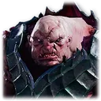
Krall Laborer Krall obrero
Verteron Grieta: Verteron
Verteron · nv 21 · 27 apariciones
Krall soldado armado Krall Armed Soldier (zona Elyos) : 27 aparicionesKrall centinela Krall Sentinel (zona Elyos) : 19 aparicionesKrall obrero mutado Mutated Krall Laborer (zona Elyos) : 11 aparicionesCofre de mascota misterioso Mysterious Pet Chest 3,9% Cofre de mascota: Cognis Pet Chest: Cogni 2,4% Cofre de mascota de progreso Growth Pet Chest 0,5% La tengo: Krall obrero 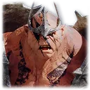
Enhanced Krall Sentry Krall vigilante mejorado
Verteron Grieta: Verteron
Verteron · nv 22 · 22 apariciones
Krall vigilante mejorado Enhanced Krall Sentry (zona Elyos) : 22 aparicionesCofre de mascota misterioso Mysterious Pet Chest 3,9% Cofre de mascota: Cognis Pet Chest: Cogni 2,4% Cofre de mascota de progreso Growth Pet Chest 0,5% La tengo: Krall vigilante mejorado 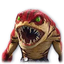
Kuru Tinkerer Kuru peón
Verteron · nv 50 · 54 apariciones Altgard · nv 50 · 28 apariciones
Kuru peón de Tolbas Tolbas Kuru Tinkerer (zona Elyos) : 27 aparicionesKuru peón de eternidad Eternal Kuru Tinkerer (zona Elyos) : 54 aparicionesKuru peón Kuru Tinkerer (zona Asmodian) : 28 aparicionesCofre de mascota misterioso Mysterious Pet Chest 3,9% Cofre de mascota: Cognis Pet Chest: Cogni 2,4% Cofre de mascota de progreso Growth Pet Chest 0,5% La tengo: Kuru peón Kuru Overseer Kuru supervisor
Verteron · nv 50 · 30 apariciones Altgard · nv 50 · 12 apariciones
Kuru supervisor de eternidad Eternal Kuru Overseer (zona Elyos) : 30 aparicionesKuru supervisor Kuru Overseer (zona Asmodian) : 12 aparicionesCofre de mascota misterioso Mysterious Pet Chest 3,9% Cofre de mascota: Cognis Pet Chest: Cogni 2,4% Cofre de mascota de progreso Growth Pet Chest 0,5% La tengo: Kuru supervisor Kuru Worker Kuru trabajador
Verteron · nv 50 · 82 apariciones Altgard · nv 50 · 93 apariciones
Kuru trabajador de Tolbas Tolbas Kuru Worker (zona Elyos) : 34 aparicionesKuru peón fiero Harsh Kuru Tinkerer (zona Elyos) : 9 aparicionesKuru trabajador de eternidad Eternal Kuru Worker (zona Elyos) : 82 aparicionesKuru trabajador Kuru Worker (zona Asmodian) : 93 aparicionesCofre de mascota misterioso Mysterious Pet Chest 3,9% Cofre de mascota: Cognis Pet Chest: Cogni 2,4% Cofre de mascota de progreso Growth Pet Chest 0,5% La tengo: Kuru trabajador Phantasmal Lakshmi Lakshmi de ensueño
Draupnir · jefe
Jefe de mazmorra Lakshmi de ensueño Phantasmal Lakshmi Cofre de mascota misterioso Mysterious Pet Chest 3,9% Cofre de mascota: Cognis Pet Chest: Cogni 2,4% Cofre de mascota de progreso Growth Pet Chest 0,5% La tengo: Lakshmi de ensueño Manduri Trebuchet Worker Lanzapiedras Manduri
Verteron · nv 39 · 59 apariciones Altgard · nv 41 · 83 apariciones
Manduri de la colina Hill Manduri (zona Elyos) : 59 aparicionesLanzapiedras Manduri de rubí Crimson Manduri Slinger (zona Elyos) : 46 aparicionesExplorador Manduri de la Garra Negra Black Claw Manduri Scout (zona Asmodian) : 83 aparicionesCofre de mascota misterioso Mysterious Pet Chest 3,9% Cofre de mascota: Cognis Pet Chest: Cogni 2,4% Cofre de mascota de progreso Growth Pet Chest 0,5% La tengo: Lanzapiedras Manduri 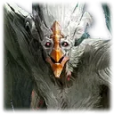
Modified Lupyllini Lupyllini modificado
Verteron · nv 40 · 30 apariciones Altgard · nv 49 · 71 apariciones
Sujeto de prueba de Lupyllini Lupyllini Test Subject (zona Elyos) : 30 aparicionesLupyllini de eternidad Eternal Lupyllini (zona Elyos) : 22 aparicionesLupyllini modificado Modified Lupyllini (zona Asmodian) : 71 aparicionesCofre de mascota misterioso Mysterious Pet Chest 3,9% Cofre de mascota: Cognis Pet Chest: Cogni 2,4% Cofre de mascota de progreso Growth Pet Chest 0,5% La tengo: Lupyllini modificado 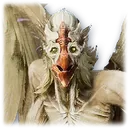
Decomposed Lupyllini Lupyllini podrido
Verteron · nv 35 · 8 apariciones Altgard · nv 10-32 · 67 apariciones
Monstruo de mazmorra Lupyllini abismal Abyssal Lupyllini Caverna del Cuerno Feroz Ferocious Horn Den Lupyllini contaminado de la Meseta Contaminated Highland Lupyllini (zona Elyos) : 8 aparicionesLupyllini podrido Decomposed Lupyllini (zona Asmodian) : 67 aparicionesLupyllini feroz Ferocious Lupyllini (zona Asmodian) : 16 aparicionesCofre de mascota misterioso Mysterious Pet Chest 3,9% Cofre de mascota: Cognis Pet Chest: Cogni 2,4% Cofre de mascota de progreso Growth Pet Chest 0,5% La tengo: Lupyllini podrido 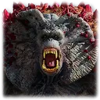
Manduri Fighter Manduri luchador
Verteron · nv 48 · 24 apariciones Altgard · nv 42 · 38 apariciones
Manduri luchador rubí Crimson Manduri Fighter (zona Elyos) : 24 aparicionesManduri combatiente de la Garra Negra Black Claw Manduri Combatant (zona Asmodian) : 38 aparicionesCofre de mascota misterioso Mysterious Pet Chest 3,9% Cofre de mascota: Cognis Pet Chest: Cogni 2,4% Cofre de mascota de progreso Growth Pet Chest 0,5% La tengo: Manduri luchador Elite Manduri Fighter Manduri luchador élite
Verteron · nv 27 · 38 apariciones Altgard · nv 41 · 37 apariciones
Manduri luchador deambulante Wandering Manduri Fighter (zona Elyos) : 38 aparicionesManduri luchador de la Garra Negra Black Claw Manduri Fighter (zona Asmodian) : 37 aparicionesCofre de mascota misterioso Mysterious Pet Chest 3,9% Cofre de mascota: Cognis Pet Chest: Cogni 2,4% Cofre de mascota de progreso Growth Pet Chest 0,5% La tengo: Manduri luchador élite Mumu Warrior Mumu guerrero
Grieta: Altgard Altgard
Altgard · nv 41 · 70 apariciones
Mumu guarda Mumu Watcher (zona Asmodian) : 61 aparicionesMumu guerrero de Gribade Gribade Mumu Warrior (zona Asmodian) : 22 aparicionesMumu celador Mumu Watcher (zona Asmodian) : 70 aparicionesCofre de mascota misterioso Mysterious Pet Chest 3,9% Cofre de mascota: Cognis Pet Chest: Cogni 2,4% Cofre de mascota de progreso Growth Pet Chest 0,5% La tengo: Mumu guerrero Mumu Overseer Mumu supervisor
Solo cofres
Cofre de mascota misterioso Mysterious Pet Chest 3,9% Cofre de mascota: Cognis Pet Chest: Cogni 2,4% Cofre de mascota de progreso Growth Pet Chest 0,5% La tengo: Mumu supervisor Mumu Worker Mumu trabajador
Grieta: Altgard Altgard
Altgard · nv 32 · 83 apariciones
Mumu trabajador Mumu Worker (zona Asmodian) : 83 aparicionesMumu trabajador fugitivo Escaped Mumu Worker (zona Asmodian) : 33 aparicionesCofre de mascota misterioso Mysterious Pet Chest 3,9% Cofre de mascota: Cognis Pet Chest: Cogni 2,4% Cofre de mascota de progreso Growth Pet Chest 0,5% La tengo: Mumu trabajador Naga Elite Priest Naga sacerdotisa élite
Reshanta Inferior del Caos · nv 48 · 7 apariciones Chaotic Lower Reshanta · nv 48 · 7 apariciones
Monstruo de mazmorra Naga sacerdotisa Naga Priest Monstruo de mazmorra Sacerdote élite de Arkanis Arkanis Elite Priest Arkanis Fragmentado Shattered Arkanis Naga mago tenebroso del Abismo Abyss Naga Dark Mage Reshanta Inferior del Caos Chaotic Lower Reshanta : 7 aparicionesCofre de mascota misterioso Mysterious Pet Chest 3,9% Cofre de mascota: Cognis Pet Chest: Cogni 2,4% Cofre de mascota de progreso Growth Pet Chest 0,5% La tengo: Naga sacerdotisa élite Predator Saraswati Saraswati depredador
Draupnir · jefe
Jefe de mazmorra Saraswati depredador Predator Saraswati Cofre de mascota misterioso Mysterious Pet Chest 3,9% Cofre de mascota: Cognis Pet Chest: Cogni 2,4% Cofre de mascota de progreso Growth Pet Chest 0,5% La tengo: Saraswati depredador Addicted Shulak Cart Worker Shulak carretero envenenado
Grieta o mazmorra Altgard o mazmorra
Altgard · nv 36 · 29 apariciones
Monstruo de mazmorra Shulak carretero mutado Mutated Shulak Cart Worker Caverna del Cuerno Feroz Ferocious Horn Den Shulak carretero impetuoso Rampaging Shulak Cart Worker (zona Asmodian) : 29 aparicionesCofre de mascota misterioso Mysterious Pet Chest 3,9% Cofre de mascota: Cognis Pet Chest: Cogni 2,4% Cofre de mascota de progreso Growth Pet Chest 0,5% La tengo: Shulak carretero envenenado 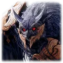
Urugugu Brawler Urugugu contendiente
Cañón de Urugugu · élite Urugugu Canyon · élite
Monstruo de mazmorra Urugugu contendiente Urugugu Brawler Cañón de Urugugu Urugugu Canyon Cofre de mascota misterioso Mysterious Pet Chest 3,9% Cofre de mascota: Cognis Pet Chest: Cogni 2,4% Cofre de mascota de progreso Growth Pet Chest 0,5% La tengo: Urugugu contendiente 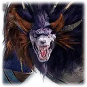
Varg Berserker Varg berserker
Grieta: Altgard Altgard
Altgard · nv 42 · 26 apariciones
Varg berserker Varg Berserker (zona Asmodian) : 21 aparicionesGuardia de la Unidad Directa del Jefe Chief's Bodyguard (zona Asmodian) : 26 aparicionesCofre de mascota misterioso Mysterious Pet Chest 3,9% Cofre de mascota: Cognis Pet Chest: Cogni 2,4% Cofre de mascota de progreso Growth Pet Chest 0,5% La tengo: Varg berserker 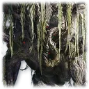
Verteron · nv 44 · 33 apariciones Altgard · nv 33 · 22 apariciones
Agrint podrido Decaying Agrint (zona Elyos) : 19 aparicionesAgrint antiguo Old Agrint (zona Elyos) : 33 aparicionesAgrint contaminado Contaminated Agrint (zona Elyos) : 16 aparicionesAgrint de la eternidad Eternal Agrint (zona Elyos) : 10 aparicionesElim mutado Mutated Elim (zona Asmodian) : 20 aparicionesAgrint de ruinas Ruin Agrint (zona Asmodian) : 22 aparicionesAgrint de la isla Island Agrint (zona Asmodian) : 11 aparicionesAgrint de azufre Sulfur Agrint Reshanta Inferior del Caos Chaotic Lower Reshanta : 2 aparicionesAgrint de la Raíz Root Agrint Reshanta Inferior del Caos Chaotic Lower Reshanta : 10 aparicionesCofre de mascota misterioso Mysterious Pet Chest 3,9% Cofre de mascota: Naturas Pet Chest: Natura 2,1% Cofre de mascota de progreso Growth Pet Chest 0,5% La tengo: Agrint Ashen Agrint Agrint cenizo
Grieta: Altgard Altgard
Altgard · nv 48 · 8 apariciones
Agrint inestable Unstable Agrint (zona Asmodian) : 8 aparicionesCofre de mascota misterioso Mysterious Pet Chest 3,9% Cofre de mascota: Naturas Pet Chest: Natura 2,1% Cofre de mascota de progreso Growth Pet Chest 0,5% La tengo: Agrint cenizo Dry Leaf Agrint Agrint de hojas secas
Verteron Grieta: Verteron
Verteron · nv 25 · 32 apariciones
Agrint del bosque Forest Agrint (zona Elyos) : 32 aparicionesCofre de mascota misterioso Mysterious Pet Chest 3,9% Cofre de mascota: Naturas Pet Chest: Natura 2,1% Cofre de mascota de progreso Growth Pet Chest 0,5% La tengo: Agrint de hojas secas Thin Agrint Agrint famélico
Reshanta Inferior del Caos · nv 47 · 30 apariciones Chaotic Lower Reshanta · nv 47 · 30 apariciones
Agrint rubí Crimson Agrint (zona Elyos) : 15 aparicionesAgrint de ojos rojos Red Eye Agrint (zona Asmodian) : 5 aparicionesAgrint de azufre famélico Thin Sulfur Agrint Reshanta Inferior del Caos Chaotic Lower Reshanta : 30 aparicionesSauce codicioso de Drana del Abismo Abyss Drana Greedwillow Piso Exterior de la Reshanta del Caos Chaotic Outer Reshanta : 23 aparicionesCofre de mascota misterioso Mysterious Pet Chest 3,9% Cofre de mascota: Naturas Pet Chest: Natura 2,1% Cofre de mascota de progreso Growth Pet Chest 0,5% La tengo: Agrint famélico Withered Agrint Agrint marchito
Verteron · nv 44 · 30 apariciones Reshanta Inferior del Caos · nv 46 · 27 apariciones Chaotic Lower Reshanta · nv 46 · 27 apariciones
Agrint marchito del cañón Withered Canyon Agrint (zona Elyos) : 6 aparicionesAgrint famélico Thin Agrint (zona Elyos) : 30 aparicionesAgrint de azufre marchito Withered Sulfur Agrint Reshanta Inferior del Caos Chaotic Lower Reshanta : 27 aparicionesCofre de mascota misterioso Mysterious Pet Chest 3,9% Cofre de mascota: Naturas Pet Chest: Natura 2,1% Cofre de mascota de progreso Growth Pet Chest 0,5% La tengo: Agrint marchito Forest Specter Ánima del bosque
Verteron Grieta: Verteron
Verteron · nv 33 · 23 apariciones
Espíritu de vid del cañón Canyon Vine Spirit (zona Elyos) : 23 aparicionesÁnima de enredadera turbia Tainted Vine Specter (zona Elyos) : 23 aparicionesCofre de mascota misterioso Mysterious Pet Chest 3,9% Cofre de mascota: Naturas Pet Chest: Natura 2,1% Cofre de mascota de progreso Growth Pet Chest 0,5% La tengo: Ánima del bosque
Solo cofres
Cofre de mascota misterioso Mysterious Pet Chest 3,9% Cofre de mascota: Naturas Pet Chest: Natura 2,1% Cofre de mascota de progreso Growth Pet Chest 0,5% La tengo: Dionae Ashen Dionae Dionae ceniza
Grieta: Altgard Altgard
Altgard · nv 21 · 14 apariciones
Dionae ceniza Ashen Dionae (zona Asmodian) : 14 aparicionesCofre de mascota misterioso Mysterious Pet Chest 3,9% Cofre de mascota: Naturas Pet Chest: Natura 2,1% Cofre de mascota de progreso Growth Pet Chest 0,5% La tengo: Dionae ceniza Forest Dionae Dionae del bosque
Solo cofres
Cofre de mascota misterioso Mysterious Pet Chest 3,9% Cofre de mascota: Naturas Pet Chest: Natura 2,1% Cofre de mascota de progreso Growth Pet Chest 0,5% La tengo: Dionae del bosque Ancient Spirit Espíritu ancestral
Solo cofres
Cofre de mascota misterioso Mysterious Pet Chest 3,9% Cofre de mascota: Naturas Pet Chest: Natura 2,1% Cofre de mascota de progreso Growth Pet Chest 0,5% La tengo: Espíritu ancestral Lesser Water Spirit Espíritu de agua inferior
Verteron o mazmorra Grieta o mazmorra
Verteron · nv 16 · 34 apariciones
Monstruo de mazmorra Espíritu de agua fragmentado Shattered Water Spirit Arkanis Fragmentado Shattered Arkanis Espíritu de agua Water Spirit (zona Elyos) : 34 aparicionesEspíritu de agua de eternidad Eternal Water Spirit (zona Elyos) : 10 aparicionesCofre de mascota misterioso Mysterious Pet Chest 3,9% Cofre de mascota: Naturas Pet Chest: Natura 2,1% Cofre de mascota de progreso Growth Pet Chest 0,5% La tengo: Espíritu de agua inferior Intermediate Water Spirit Espíritu de agua intermedio
Verteron · nv 45 · 20 apariciones Altgard · nv 46 · 21 apariciones
Monstruo de mazmorra Espíritu de agua susurrante Whispering Water Spirit Arkanis Fragmentado Shattered Arkanis Espíritu de agua errabundo Wandering Water Spirit (zona Elyos) : 20 aparicionesEspíritu de agua perverso Violent Water Spirit (zona Elyos) : 1 apariciónEspíritu de agua intermedio inestable Unstable Intermediate Water Spirit (zona Asmodian) : 21 aparicionesEspíritu de agua inmortal Immortal Water Spirit (zona Asmodian) : 11 aparicionesCofre de mascota misterioso Mysterious Pet Chest 3,9% Cofre de mascota: Naturas Pet Chest: Natura 2,1% Cofre de mascota de progreso Growth Pet Chest 0,5% La tengo: Espíritu de agua intermedio Superior Water Spirit Espíritu de agua superior
Verteron · nv 45 · 5 apariciones Altgard · nv 29 · 30 apariciones
Monstruo de mazmorra Espíritu de agua iracundo Enraged Water Spirit Arkanis Fragmentado Shattered Arkanis Espíritu de agua corriente Torrent Spirit (zona Elyos) : 5 aparicionesEspíritu de rocío de agua Water Mist Spirit (zona Asmodian) : 30 aparicionesEspíritu de agua superior inestable Unstable Superior Water Spirit (zona Asmodian) : 20 aparicionesProtector Espíritu de agua inmortal Immortal Water Spirit Guardian (zona Asmodian) : 7 aparicionesCofre de mascota misterioso Mysterious Pet Chest 3,9% Cofre de mascota: Naturas Pet Chest: Natura 2,1% Cofre de mascota de progreso Growth Pet Chest 0,5% La tengo: Espíritu de agua superior Ultimate Water Spirit Espíritu de agua supremo
Arkanis Fragmentado · élite Shattered Arkanis · élite
Monstruo de mazmorra Espíritu de agua del vacío Void Water Spirit Arkanis Fragmentado Shattered Arkanis Cofre de mascota misterioso Mysterious Pet Chest 3,9% Cofre de mascota: Naturas Pet Chest: Natura 2,1% Cofre de mascota de progreso Growth Pet Chest 0,5% La tengo: Espíritu de agua supremo Lesser Fire Spirit Espíritu de fuego inferior
Verteron · nv 51 · 15 apariciones Altgard · nv 27 · 25 apariciones
Monstruo de mazmorra Espíritu de fulgor Spark Spirit Templo de Fuego Fire Temple Espíritu de fuego de eternidad Eternal Fire Spirit (zona Elyos) : 15 aparicionesEspíritu de ascua ardiente Burning Ember Spirit (zona Asmodian) : 25 aparicionesCofre de mascota misterioso Mysterious Pet Chest 3,9% Cofre de mascota: Naturas Pet Chest: Natura 2,1% Cofre de mascota de progreso Growth Pet Chest 0,5% La tengo: Espíritu de fuego inferior Intermediate Fire Spirit Espíritu de fuego intermedio
Verteron · nv 51 · 4 apariciones Altgard · nv 48 · 14 apariciones
Monstruo de mazmorra Espíritu de llamas Flame Spirit Templo de Fuego Fire Temple Espíritu de fuego perverso Violent Fire Spirit (zona Elyos) : 4 aparicionesEspíritu de fuego intermedio inestable Unstable Intermediate Fire Spirit (zona Asmodian) : 14 aparicionesEspíritu de fuego inmortal Immortal Fire Spirit (zona Asmodian) : 11 aparicionesCofre de mascota misterioso Mysterious Pet Chest 3,9% Cofre de mascota: Naturas Pet Chest: Natura 2,1% Cofre de mascota de progreso Growth Pet Chest 0,5% La tengo: Espíritu de fuego intermedio Superior Fire Spirit Espíritu de fuego superior
Verteron · nv 45 · 5 apariciones Altgard · nv 27 · 45 apariciones
Monstruo de mazmorra Espíritu de fulgor despiadado Merciless Spark Spirit Templo de Fuego Fire Temple Espíritu de fuego de karma Hellfire Spirit (zona Elyos) : 5 aparicionesEspíritu de llamas Flame Spirit (zona Asmodian) : 45 aparicionesEspíritu de fuego superior inestable Unstable Superior Fire Spirit (zona Asmodian) : 16 aparicionesProtector Espíritu de fuego inmortal Immortal Fire Spirit Guardian (zona Asmodian) : 4 aparicionesCofre de mascota misterioso Mysterious Pet Chest 3,9% Cofre de mascota: Naturas Pet Chest: Natura 2,1% Cofre de mascota de progreso Growth Pet Chest 0,5% La tengo: Espíritu de fuego superior Ultimate Fire Spirit Espíritu de fuego supremo
Templo de Fuego · élite Fire Temple · élite
Monstruo de mazmorra Espíritu de llamas despiadado Merciless Flame Spirit Templo de Fuego Fire Temple Cofre de mascota misterioso Mysterious Pet Chest 3,9% Cofre de mascota: Naturas Pet Chest: Natura 2,1% Cofre de mascota de progreso Growth Pet Chest 0,5% La tengo: Espíritu de fuego supremo Stone Spirit Espíritu de piedra
Verteron · nv 40 · 38 apariciones Reshanta Inferior del Caos · nv 48 · 10 apariciones Chaotic Lower Reshanta · nv 48 · 10 apariciones
Espíritu de piedra de la colina Hill Stone Spirit (zona Elyos) : 38 aparicionesEspíritu de piedra desgastada Faded Stone Spirit (zona Asmodian) : 5 aparicionesEspíritu de roca abismal Abyss Rock Spirit Reshanta Inferior del Caos Chaotic Lower Reshanta : 10 aparicionesCofre de mascota misterioso Mysterious Pet Chest 3,9% Cofre de mascota: Naturas Pet Chest: Natura 2,1% Cofre de mascota de progreso Growth Pet Chest 0,5% La tengo: Espíritu de piedra Odyle Stone Spirit Espíritu de piedra de Od
Grieta o mazmorra Altgard o mazmorra
Altgard · nv 46 · 10 apariciones
Monstruo de mazmorra Espíritu de roca de Od Odyle Stone Spirit Isla Aérea de Vakron Vakron Sky Island Espíritu de Od desgastada Faded Odyle Spirit (zona Asmodian) : 10 aparicionesCofre de mascota misterioso Mysterious Pet Chest 3,9% Cofre de mascota: Naturas Pet Chest: Natura 2,1% Cofre de mascota de progreso Growth Pet Chest 0,5% La tengo: Espíritu de piedra de Od Lesser Earth Spirit Espíritu de tierra inferior
Verteron o mazmorra Grieta o mazmorra
Verteron · nv 51 · 13 apariciones
Monstruo de mazmorra Espíritu de roca Rock Spirit Isla Aérea de Vakron Vakron Sky Island Espíritu de tierra de eternidad Eternal Earth Spirit (zona Elyos) : 13 aparicionesCofre de mascota misterioso Mysterious Pet Chest 3,9% Cofre de mascota: Naturas Pet Chest: Natura 2,1% Cofre de mascota de progreso Growth Pet Chest 0,5% La tengo: Espíritu de tierra inferior Intermediate Earth Spirit Espíritu de tierra intermedio
Verteron · nv 44 · 15 apariciones Altgard · nv 51 · 7 apariciones
Monstruo de mazmorra Espíritu de terreno Earth Spirit Isla Aérea de Vakron Vakron Sky Island Espíritu de tierra errabundo Wandering Earth Spirit (zona Elyos) : 15 aparicionesEspíritu de tierra perverso Violent Earth Spirit (zona Elyos) : 4 aparicionesEspíritu de tierra inmortal Immortal Earth Spirit (zona Asmodian) : 7 aparicionesCofre de mascota misterioso Mysterious Pet Chest 3,9% Cofre de mascota: Naturas Pet Chest: Natura 2,1% Cofre de mascota de progreso Growth Pet Chest 0,5% La tengo: Espíritu de tierra intermedio Superior Earth Spirit Espíritu de tierra superior
Verteron · nv 45 · 5 apariciones Altgard · nv 28 · 49 apariciones
Monstruo de mazmorra Espíritu de roca iracundo Enraged Rock Spirit Isla Aérea de Vakron Vakron Sky Island Espíritu de roca fantástica Peculiar Rock Spirit (zona Elyos) : 5 aparicionesEspíritu de humus Corroded Soil Spirit (zona Asmodian) : 49 aparicionesProtector Espíritu de tierra inmortal Immortal Earth Spirit Guardian (zona Asmodian) : 6 aparicionesCofre de mascota misterioso Mysterious Pet Chest 3,9% Cofre de mascota: Naturas Pet Chest: Natura 2,1% Cofre de mascota de progreso Growth Pet Chest 0,5% La tengo: Espíritu de tierra superior Ultimate Earth Spirit Espíritu de tierra supremo
Isla Aérea de Vakron · élite Vakron Sky Island · élite
Monstruo de mazmorra Espíritu de terreno iracundo Enraged Earth Spirit Isla Aérea de Vakron Vakron Sky Island Cofre de mascota misterioso Mysterious Pet Chest 3,9% Cofre de mascota: Naturas Pet Chest: Natura 2,1% Cofre de mascota de progreso Growth Pet Chest 0,5% La tengo: Espíritu de tierra supremo Black Spirit Espíritu de tinieblas
Verteron · nv 39 · 93 apariciones Altgard · nv 44 · 18 apariciones
Espíritu contaminado Contaminated Spirit (zona Elyos) : 40 aparicionesEspíritu retorcido Distorted Spirit (zona Elyos) : 93 aparicionesEspíritu de tinieblas Black Spirit (zona Asmodian) : 18 aparicionesEspíritu corrupto del Abismo Abyss Corrupted Spirit Reshanta Inferior del Caos Chaotic Lower Reshanta : 17 aparicionesCofre de mascota misterioso Mysterious Pet Chest 3,9% Cofre de mascota: Naturas Pet Chest: Natura 2,1% Cofre de mascota de progreso Growth Pet Chest 0,5% La tengo: Espíritu de tinieblas Lesser Wind Spirit Espíritu de viento inferior
Verteron · nv 51 · 10 apariciones Altgard · nv 26 · 51 apariciones
Espíritu de aire Air Spirit (zona Elyos) : 6 aparicionesEspíritu de viento de eternidad Eternal Wind Spirit (zona Elyos) : 10 aparicionesEspíritu de brisa Soft Breeze Spirit (zona Asmodian) : 51 aparicionesCofre de mascota misterioso Mysterious Pet Chest 3,9% Cofre de mascota: Naturas Pet Chest: Natura 2,1% Cofre de mascota de progreso Growth Pet Chest 0,5% La tengo: Espíritu de viento inferior Intermediate Wind Spirit Espíritu de viento intermedio
Verteron · nv 44 · 17 apariciones Altgard · nv 51 · 10 apariciones
Espíritu de viento errabundo Wandering Wind Spirit (zona Elyos) : 17 aparicionesEspíritu de viento perverso Violent Wind Spirit (zona Elyos) : 1 apariciónEspíritu de viento inmortal Immortal Wind Spirit (zona Asmodian) : 10 aparicionesCofre de mascota misterioso Mysterious Pet Chest 3,9% Cofre de mascota: Naturas Pet Chest: Natura 2,1% Cofre de mascota de progreso Growth Pet Chest 0,5% La tengo: Espíritu de viento intermedio Superior Wind Spirit Espíritu de viento superior
Verteron · nv 45 · 5 apariciones Altgard · nv 26 · 52 apariciones
Espíritu de viento gélido Brisk Spirit (zona Elyos) : 5 aparicionesEspíritu de vendaval Whirlwind Spirit (zona Asmodian) : 52 aparicionesProtector Espíritu de viento inmortal Immortal Wind Spirit Guardian (zona Asmodian) : 6 aparicionesCofre de mascota misterioso Mysterious Pet Chest 3,9% Cofre de mascota: Naturas Pet Chest: Natura 2,1% Cofre de mascota de progreso Growth Pet Chest 0,5% La tengo: Espíritu de viento superior Ultimate Wind Spirit Espíritu de viento supremo
Solo cofres
Cofre de mascota misterioso Mysterious Pet Chest 3,9% Cofre de mascota: Naturas Pet Chest: Natura 2,1% Cofre de mascota de progreso Growth Pet Chest 0,5% La tengo: Espíritu de viento supremo Forest Spirit Espíritu del bosque
Verteron · nv 13 · 25 apariciones Altgard · nv 26 · 26 apariciones
Espíritu de vid de la ciénaga Marsh Vine Spirit (zona Elyos) : 25 aparicionesEspíritu de vid contaminado Contaminated Vine Spirit (zona Elyos) : 20 aparicionesEspíritu del bosque de la cuesta Ridge Forest Spirit (zona Elyos) : 14 aparicionesEspíritu del bosque del cañón profundo Deep Canyon Forest Spirit (zona Elyos) : 15 aparicionesEspíritu del bosque Forest Spirit (zona Asmodian) : 26 aparicionesCofre de mascota misterioso Mysterious Pet Chest 3,9% Cofre de mascota: Naturas Pet Chest: Natura 2,1% Cofre de mascota de progreso Growth Pet Chest 0,5% La tengo: Espíritu del bosque Mutated Forest Spirit Espíritu del bosque mutado
Verteron · nv 37 · 30 apariciones Altgard · nv 14 · 25 apariciones
Masa de vid mutante Mutated Vine Bundle (zona Elyos) : 29 aparicionesMasa de vid contaminada Contaminated Vine Bundle (zona Elyos) : 30 aparicionesÁnima condensada Condensed Specter (zona Asmodian) : 25 aparicionesCofre de mascota misterioso Mysterious Pet Chest 3,9% Cofre de mascota: Naturas Pet Chest: Natura 2,1% Cofre de mascota de progreso Growth Pet Chest 0,5% La tengo: Espíritu del bosque mutado Drana Spore Espora Drana
Verteron Grieta: Verteron
Verteron · nv 47 · 60 apariciones
Espora mutante rubí Crimson Mutated Spore (zona Elyos) : 60 aparicionesCofre de mascota misterioso Mysterious Pet Chest 3,9% Cofre de mascota: Naturas Pet Chest: Natura 2,1% Cofre de mascota de progreso Growth Pet Chest 0,5% La tengo: Espora Drana Red Spark Ignus Fulgor rojo Ignus
Templo de Fuego · jefe Fire Temple · jefe
Jefe de mazmorra Fulgor rojo Ignus Red Spark Ignus Templo de Fuego Fire Temple Cofre de mascota misterioso Mysterious Pet Chest 3,9% Cofre de mascota: Naturas Pet Chest: Natura 2,1% Cofre de mascota de progreso Growth Pet Chest 0,5% La tengo: Fulgor rojo Ignus Verteron Grieta: Verteron
Verteron · nv 12 · 56 apariciones
Fungen de capucha roja Red Cap Fungen (zona Elyos) : 56 aparicionesCofre de mascota misterioso Mysterious Pet Chest 3,9% Cofre de mascota: Naturas Pet Chest: Natura 2,1% Cofre de mascota de progreso Growth Pet Chest 0,5% La tengo: Fungen Elite Poisonous Spore Fungen Fungen de esporas venenosas élite
Solo cofres
Cofre de mascota misterioso Mysterious Pet Chest 3,9% Cofre de mascota: Naturas Pet Chest: Natura 2,1% Cofre de mascota de progreso Growth Pet Chest 0,5% La tengo: Fungen de esporas venenosas élite Verteron Grieta: Verteron
Verteron · nv 12 · 32 apariciones
Fungie de capucha roja Red Cap Fungie (zona Elyos) : 32 aparicionesCofre de mascota misterioso Mysterious Pet Chest 3,9% Cofre de mascota: Naturas Pet Chest: Natura 2,1% Cofre de mascota de progreso Growth Pet Chest 0,5% La tengo: Fungie
Verteron · nv 24 · 16 apariciones Altgard · nv 28 · 77 apariciones
Gravi de tallo rojo Red Stalk Gravi (zona Elyos) : 10 aparicionesGravi de Tolbas Tolbas Gravi (zona Elyos) : 16 aparicionesGravi rosado Pink Gravi (zona Asmodian) : 77 aparicionesCofre de mascota misterioso Mysterious Pet Chest 3,9% Cofre de mascota: Naturas Pet Chest: Natura 2,1% Cofre de mascota de progreso Growth Pet Chest 0,5% La tengo: Gravi Large Leaf Gravi Gravi de grandes hojas
Verteron · nv 18 · 18 apariciones Altgard · nv 30 · 30 apariciones
Gravi de la colina del Río Ellun Ellun River Hill Gravi (zona Elyos) : 18 aparicionesGravi de grandes hojas Large Leaf Gravi (zona Elyos) : 10 aparicionesGravi de grandes hojas Large Leaf Gravi (zona Asmodian) : 30 aparicionesCofre de mascota misterioso Mysterious Pet Chest 3,9% Cofre de mascota: Naturas Pet Chest: Natura 2,1% Cofre de mascota de progreso Growth Pet Chest 0,5% La tengo: Gravi de grandes hojas Magic Gravi Gravi mágico
Verteron · nv 24 · 16 apariciones Altgard · nv 29 · 95 apariciones
Gravi mágico de ilusión Illusion Magic Gravi (zona Elyos) : 10 aparicionesGravi mágico de Tolbas Tolbas Magic Gravi (zona Elyos) : 16 aparicionesGravi mágico del Bosque de Purificación Purifying Forest Magic Gravi (zona Asmodian) : 95 aparicionesGravi inestable Unstable Gravi (zona Asmodian) : 21 aparicionesCofre de mascota misterioso Mysterious Pet Chest 3,9% Cofre de mascota: Naturas Pet Chest: Natura 2,1% Cofre de mascota de progreso Growth Pet Chest 0,5% La tengo: Gravi mágico Spirit King's Bodyguard Warrior Guerrero escolta del Rey Espíritu
Reshanta Inferior del Caos · nv 49 · 18 apariciones Chaotic Lower Reshanta · nv 49 · 18 apariciones
Guerrero Espíritu del Árbol Viejo Old Tree Spirit Warrior Reshanta Inferior del Caos Chaotic Lower Reshanta : 18 aparicionesCofre de mascota misterioso Mysterious Pet Chest 3,9% Cofre de mascota: Naturas Pet Chest: Natura 2,1% Cofre de mascota de progreso Growth Pet Chest 0,5% La tengo: Guerrero escolta del Rey Espíritu Black Smoke Murute Humo negro Murute
Templo de Fuego · jefe Fire Temple · jefe
Jefe de mazmorra Humo negro Murute Black Smoke Murute Templo de Fuego Fire Temple Anticipado: Cofre de selección de mascota Advance: Pet Selection Chest Cofre de mascota misterioso Mysterious Pet Chest 3,9% Cofre de mascota: Naturas Pet Chest: Natura 2,1% Cofre de mascota de progreso Growth Pet Chest 0,5% La tengo: Humo negro Murute Konutin Worker Konutin trabajador
Verteron o mazmorra Grieta o mazmorra
Verteron · nv 24 · 30 apariciones
Monstruo de mazmorra Konutin adoctrinado Brainwashed Konutin Cañón de Urugugu Urugugu Canyon Konutin trabajador de Tolbas Tolbas Konutin Worker (zona Elyos) : 30 aparicionesAnticipado: Cofre de selección de mascota Advance: Pet Selection Chest Cofre de mascota misterioso Mysterious Pet Chest 3,9% Cofre de mascota: Naturas Pet Chest: Natura 2,1% Cofre de mascota de progreso Growth Pet Chest 0,5% La tengo: Konutin trabajador
Reshanta Inferior del Caos · nv 46 · 67 apariciones Chaotic Lower Reshanta · nv 46 · 67 apariciones
Nepenthes de Tolbas Tolbas Nepenthes (zona Elyos) : 18 aparicionesNepenthes escarlata de la Meseta Scarlet Highland Nepenthes (zona Elyos) : 5 aparicionesNepenthes repugnante del Abismo Abyss Nasty Nepenthes Reshanta Inferior del Caos Chaotic Lower Reshanta : 67 aparicionesCofre de mascota misterioso Mysterious Pet Chest 3,9% Cofre de mascota: Naturas Pet Chest: Natura 2,1% Cofre de mascota de progreso Growth Pet Chest 0,5% La tengo: Nepenthes Forest Guardian Protección del bosque
Verteron Grieta: Verteron
Verteron · nv 45 · 10 apariciones
Protector del jardín Garden Guardian (zona Elyos) : 10 aparicionesCofre de mascota misterioso Mysterious Pet Chest 3,9% Cofre de mascota: Naturas Pet Chest: Natura 2,1% Cofre de mascota de progreso Growth Pet Chest 0,5% La tengo: Protección del bosque Mutated Forest Guardian Protector del bosque mutado
Grieta: Altgard Altgard
Altgard · nv 48 · 25 apariciones
Protector del bosque mutado Mutated Forest Guardian (zona Asmodian) : 18 aparicionesProtector del bosque inestable Unstable Forest Guardian (zona Asmodian) : 25 aparicionesCofre de mascota misterioso Mysterious Pet Chest 3,9% Cofre de mascota: Naturas Pet Chest: Natura 2,1% Cofre de mascota de progreso Growth Pet Chest 0,5% La tengo: Protector del bosque mutado Dried Up Forest Guardian Protector del bosque seco
Solo cofres
Cofre de mascota misterioso Mysterious Pet Chest 3,9% Cofre de mascota: Naturas Pet Chest: Natura 2,1% Cofre de mascota de progreso Growth Pet Chest 0,5% La tengo: Protector del bosque seco
Verteron · nv 47 · 21 apariciones Altgard · nv 14-49 · 117 apariciones
Rafflesia (nv 14-49) en Altgard (zona Asmodian) : 117 aparicionesRafflesia rubí Crimson Rafflesia (zona Elyos) : 21 aparicionesRafflesia inestable Unstable Rafflesia (zona Asmodian) : 33 aparicionesCofre de mascota misterioso Mysterious Pet Chest 3,9% Cofre de mascota: Naturas Pet Chest: Natura 2,1% Cofre de mascota de progreso Growth Pet Chest 0,5% La tengo: Rafflesia
Reshanta Inferior del Caos · nv 46 · 60 apariciones Chaotic Lower Reshanta · nv 46 · 60 apariciones
Zelophi costero Coastal Zelophi (zona Elyos) : 42 aparicionesZelophi de eternidad Eternal Zelophi (zona Elyos) : 14 aparicionesZelophi (nv 49) en Altgard (zona Asmodian) : 31 aparicionesZelophi del Abismo Abyss Zelophi Reshanta Inferior del Caos Chaotic Lower Reshanta : 60 aparicionesCofre de mascota misterioso Mysterious Pet Chest 3,9% Cofre de mascota: Naturas Pet Chest: Natura 2,1% Cofre de mascota de progreso Growth Pet Chest 0,5% La tengo: Zelophi Drana Contaminant Contaminante de Drana
Solo cofres
Cofre de mascota misterioso Mysterious Pet Chest 3,9% Cofre de mascota: Varians Pet Chest: Varian 2,2% Cofre de mascota de progreso Growth Pet Chest 0,5% La tengo: Contaminante de Drana Drana Predator Depredador de Drana
Verteron · nv 48 · 41 apariciones Altgard · nv 12 · 20 apariciones
Depredador de Drana rubí Crimson Drana Predator (zona Elyos) : 41 aparicionesDepredador de Drana Drana Predator (zona Asmodian) : 20 aparicionesCofre de mascota misterioso Mysterious Pet Chest 3,9% Cofre de mascota: Varians Pet Chest: Varian 2,2% Cofre de mascota de progreso Growth Pet Chest 0,5% La tengo: Depredador de Drana Faded Predator Depredador desgastado
Grieta: Altgard Altgard
Altgard · nv 35 · 15 apariciones
Depredador desgastado Faded Predator (zona Asmodian) : 15 aparicionesCofre de mascota misterioso Mysterious Pet Chest 3,9% Cofre de mascota: Varians Pet Chest: Varian 2,2% Cofre de mascota de progreso Growth Pet Chest 0,5% La tengo: Depredador desgastado Drakan Probe Drakan detector
Verteron · nv 41 · 31 apariciones Altgard · nv 19 · 26 apariciones
Controlador de procesamiento de Drana Drana Processing Maintenance Machine (zona Elyos) : 31 aparicionesBuscador intruso Intruder Seeker (zona Elyos) : 11 aparicionesDetector del Puesto de Vigilancia Outpost Probe (zona Asmodian) : 26 aparicionesDrakan detector Drakan Probe (zona Asmodian) : 24 aparicionesControlador de procesamiento de Drana Drana Processing Maintenance Machine (zona Asmodian) : 15 aparicionesBuscador de la Brigada de Lagta Lagta Brigade Seeker (zona Asmodian) : 8 aparicionesCofre de mascota misterioso Mysterious Pet Chest 3,9% Cofre de mascota: Varians Pet Chest: Varian 2,2% Cofre de mascota de progreso Growth Pet Chest 0,5% La tengo: Drakan detector Congealed Drana Drana coagulado
Grieta: Altgard Altgard
Altgard · nv 12 · 26 apariciones
Drana coagulado Congealed Drana (zona Asmodian) : 26 aparicionesCofre de mascota misterioso Mysterious Pet Chest 3,9% Cofre de mascota: Varians Pet Chest: Varian 2,2% Cofre de mascota de progreso Growth Pet Chest 0,5% La tengo: Drana coagulado Faded Drana Drana desgastado
Grieta: Altgard Altgard
Altgard · nv 35 · 13 apariciones
Masa desgastada Faded Chunk (zona Asmodian) : 13 aparicionesCofre de mascota misterioso Mysterious Pet Chest 3,9% Cofre de mascota: Varians Pet Chest: Varian 2,2% Cofre de mascota de progreso Growth Pet Chest 0,5% La tengo: Drana desgastado Duduka Trebuchet Worker Duduka lanzapiedras
Grieta o mazmorra Altgard o mazmorra
Altgard · nv 42 · 44 apariciones
Monstruo de mazmorra Duduka lanzapiedras invocado Summoned Duduka Slinger Caverna del Cuerno Feroz Ferocious Horn Den Monstruo de mazmorra Duduka hondero feroz Ferocious Duduka Slinger Caverna del Cuerno Feroz Ferocious Horn Den Duduka lanzapiedras Duduka Slinger (zona Asmodian) : 44 aparicionesCofre de mascota misterioso Mysterious Pet Chest 3,9% Cofre de mascota: Varians Pet Chest: Varian 2,2% Cofre de mascota de progreso Growth Pet Chest 0,5% La tengo: Duduka lanzapiedras Duduka Worker Duduka trabajador
Grieta o mazmorra Altgard o mazmorra
Altgard · nv 41 · 75 apariciones
Monstruo de mazmorra Duduka trabajador invocado Summoned Duduka Worker Caverna del Cuerno Feroz Ferocious Horn Den Monstruo de mazmorra Duduka trabajador feroz Ferocious Duduka Worker Caverna del Cuerno Feroz Ferocious Horn Den Duduka trabajador Duduka Worker (zona Asmodian) : 75 aparicionesCofre de mascota misterioso Mysterious Pet Chest 3,9% Cofre de mascota: Varians Pet Chest: Varian 2,2% Cofre de mascota de progreso Growth Pet Chest 0,5% La tengo: Duduka trabajador Dark Spirit Espíritu de oscuridad
Verteron Grieta: Verteron
Verteron · nv 33 · 34 apariciones
Espíritu corrupto Corrupted Spirit (zona Elyos) : 34 aparicionesEspíritu de oscuridad errabundo Wandering Dark Spirit (zona Elyos) : 20 aparicionesCofre de mascota misterioso Mysterious Pet Chest 3,9% Cofre de mascota: Varians Pet Chest: Varian 2,2% Cofre de mascota de progreso Growth Pet Chest 0,5% La tengo: Espíritu de oscuridad Flame Stone Guardian Statue Estatua guardiana de piedra de llamas
Templo de Fuego · élite Fire Temple · élite
Monstruo de mazmorra Estatua guardiana de piedra de llamas Flame Stone Guardian Statue Templo de Fuego Fire Temple Cofre de mascota misterioso Mysterious Pet Chest 3,9% Cofre de mascota: Varians Pet Chest: Varian 2,2% Cofre de mascota de progreso Growth Pet Chest 0,5% La tengo: Estatua guardiana de piedra de llamas Faded Floater Flotante desgastado
Grieta: Altgard Altgard
Altgard · nv 35 · 20 apariciones
Flotante desgastado Faded Floater (zona Asmodian) : 20 aparicionesCofre de mascota misterioso Mysterious Pet Chest 3,9% Cofre de mascota: Varians Pet Chest: Varian 2,2% Cofre de mascota de progreso Growth Pet Chest 0,5% La tengo: Flotante desgastado Verteron Grieta: Verteron
Verteron · nv 36 · 33 apariciones
Guardite descontrolado Uncontrollable Guardite (zona Elyos) : 33 aparicionesCofre de mascota misterioso Mysterious Pet Chest 3,9% Cofre de mascota: Varians Pet Chest: Varian 2,2% Cofre de mascota de progreso Growth Pet Chest 0,5% La tengo: Guardite Watcher Guardite Guardite de vigilancia
Verteron Grieta: Verteron
Verteron · nv 37 · 44 apariciones
Guardite contaminado Contaminated Guardite (zona Elyos) : 44 aparicionesCofre de mascota misterioso Mysterious Pet Chest 3,9% Cofre de mascota: Varians Pet Chest: Varian 2,2% Cofre de mascota de progreso Growth Pet Chest 0,5% La tengo: Guardite de vigilancia Elite Guardite Guardite élite
Verteron · nv 45 · 1 aparición
Jefe de campo Ansas divina Divine Ansas (zona Elyos) Cofre de mascota misterioso Mysterious Pet Chest 3,9% Cofre de mascota: Varians Pet Chest: Varian 2,2% Cofre de mascota de progreso Growth Pet Chest 0,5% La tengo: Guardite élite
Cueva de Krao · jefe Krao Cave · jefe
Jefe de mazmorra Harcon mejorado Enhanced Harcon Cueva de Krao Krao Cave Cofre de mascota misterioso Mysterious Pet Chest 3,9% Cofre de mascota: Varians Pet Chest: Varian 2,2% Cofre de mascota de progreso Growth Pet Chest 0,5% La tengo: Harcon
Verteron · nv 10 · 84 apariciones Altgard · nv 29 · 27 apariciones
Kalgolem sólido Hard Kalgolem (zona Elyos) : 84 aparicionesKalgolem ceniza Ashen Kalgolem (zona Elyos) : 30 aparicionesKalgolem furioso Angry Kalgolem (zona Asmodian) : 27 aparicionesKalgolem de la Raíz Root Kalgolem Reshanta Inferior del Caos Chaotic Lower Reshanta : 9 aparicionesCofre de mascota misterioso Mysterious Pet Chest 3,9% Cofre de mascota: Varians Pet Chest: Varian 2,2% Cofre de mascota de progreso Growth Pet Chest 0,5% La tengo: Kalgolem Blue Kalgolem Kalgolem azul
Reshanta Inferior del Caos · nv 47 · 79 apariciones Chaotic Lower Reshanta · nv 47 · 79 apariciones
Kalgolem brillante Splendent Kalgolem (zona Elyos) : 54 aparicionesKalgolem azul Blue Kalgolem (zona Asmodian) : 24 aparicionesKalgolem abismal Abyssal Kalgolem Reshanta Inferior del Caos Chaotic Lower Reshanta : 79 aparicionesCofre de mascota misterioso Mysterious Pet Chest 3,9% Cofre de mascota: Varians Pet Chest: Varian 2,2% Cofre de mascota de progreso Growth Pet Chest 0,5% La tengo: Kalgolem azul Drakana Kalgolem Kalgolem Drakana
Grieta: Altgard Altgard
Altgard · nv 11 · 13 apariciones
Kalgolem del Zona de Caída Crash Site Kalgolem (zona Asmodian) : 13 aparicionesCofre de mascota misterioso Mysterious Pet Chest 3,9% Cofre de mascota: Varians Pet Chest: Varian 2,2% Cofre de mascota de progreso Growth Pet Chest 0,5% La tengo: Kalgolem Drakana Cadaver Cleaner Limpiador de cadáveres
Grieta: Altgard Altgard
Altgard · nv 34 · 61 apariciones
Limpiador de cadáveres de las ruinas Ruins Corpse Cleaner (zona Asmodian) : 17 aparicionesLimpiador de cadáveres feroz Ferocious Cadaver Cleaner (zona Asmodian) : 61 aparicionesCofre de mascota misterioso Mysterious Pet Chest 3,9% Cofre de mascota: Varians Pet Chest: Varian 2,2% Cofre de mascota de progreso Growth Pet Chest 0,5% La tengo: Limpiador de cadáveres Swamp Monster Monstruo de la ciénega
Solo cofres
Cofre de mascota misterioso Mysterious Pet Chest 3,9% Cofre de mascota: Varians Pet Chest: Varian 2,2% Cofre de mascota de progreso Growth Pet Chest 0,5% La tengo: Monstruo de la ciénega Forest Monster Monstruo del bosque
Verteron · nv 24 · 19 apariciones Altgard · nv 21 · 12 apariciones
Targon del Bosque de Tolbas Tolbas Forest Targon (zona Elyos) : 19 aparicionesGuardabosques quemado Burned Forester (zona Asmodian) : 12 aparicionesCofre de mascota misterioso Mysterious Pet Chest 3,9% Cofre de mascota: Varians Pet Chest: Varian 2,2% Cofre de mascota de progreso Growth Pet Chest 0,5% La tengo: Monstruo del bosque Soulless Corpse Gnat Mosquito de cadáver sin alma
Grieta: Altgard Altgard
Altgard · nv 33 · 22 apariciones
Mosquito de cadáver sin alma Soulless Corpse Gnat (zona Asmodian) : 22 aparicionesCofre de mascota misterioso Mysterious Pet Chest 3,9% Cofre de mascota: Varians Pet Chest: Varian 2,2% Cofre de mascota de progreso Growth Pet Chest 0,5% La tengo: Mosquito de cadáver sin alma Elite Soulless Corpse Gnat Mosquito de cadáver sin alma élite
Solo cofres
Cofre de mascota misterioso Mysterious Pet Chest 3,9% Cofre de mascota: Varians Pet Chest: Varian 2,2% Cofre de mascota de progreso Growth Pet Chest 0,5% La tengo: Mosquito de cadáver sin alma élite Grieta: Altgard Altgard
Altgard · nv 44 · 26 apariciones
Mudthorn envenenado Addicted Mudthorn (zona Asmodian) : 11 aparicionesRestos de subespacio Remnant of Subspace (zona Asmodian) : 26 aparicionesCofre de mascota misterioso Mysterious Pet Chest 3,9% Cofre de mascota: Varians Pet Chest: Varian 2,2% Cofre de mascota de progreso Growth Pet Chest 0,5% La tengo: Mudthorn Drana Mutant Mutación de Drana
Grieta: Altgard Altgard
Altgard · nv 10 · 50 apariciones
Mutación retorcida Twisted Mutant (zona Asmodian) : 50 aparicionesCofre de mascota misterioso Mysterious Pet Chest 3,9% Cofre de mascota: Varians Pet Chest: Varian 2,2% Cofre de mascota de progreso Growth Pet Chest 0,5% La tengo: Mutación de Drana Drana Mutant Brute Mutación de Drana brutal
Verteron · nv 50 · 25 apariciones Altgard · nv 50 · 28 apariciones
Mutación de Drana de eternidad Eternal Drana Mutant (zona Elyos) : 25 aparicionesMutación de Drana rubí Crimson Drana Mutant (zona Elyos) : 23 aparicionesMutación de Drana Drana Mutant (zona Asmodian) : 28 aparicionesCofre de mascota misterioso Mysterious Pet Chest 3,9% Cofre de mascota: Varians Pet Chest: Varian 2,2% Cofre de mascota de progreso Growth Pet Chest 0,5% La tengo: Mutación de Drana brutal Krao Mutant Mutación de Krao
Cueva de Krao · élite Krao Cave · élite
Monstruo de mazmorra Mutación de Krao Krao Mutant Cueva de Krao Krao Cave Cofre de mascota misterioso Mysterious Pet Chest 3,9% Cofre de mascota: Varians Pet Chest: Varian 2,2% Cofre de mascota de progreso Growth Pet Chest 0,5% La tengo: Mutación de Krao Faded Mutant Mutación desgastada
Piso Exterior de la Reshanta del Caos · nv 46 · 51 apariciones Chaotic Outer Reshanta · nv 46 · 51 apariciones
Mutación descolorida Faded Mutant (zona Asmodian) : 43 aparicionesMutación de Drana del Abismo Abyss Drana Mutant Piso Exterior de la Reshanta del Caos Chaotic Outer Reshanta : 51 aparicionesCofre de mascota misterioso Mysterious Pet Chest 3,9% Cofre de mascota: Varians Pet Chest: Varian 2,2% Cofre de mascota de progreso Growth Pet Chest 0,5% La tengo: Mutación desgastada Faded Mutant Brute Mutación desgastada brutal
Piso Exterior de la Reshanta del Caos · nv 46 · 16 apariciones Chaotic Outer Reshanta · nv 46 · 16 apariciones
Mutación desgastada brutal Faded Mutant Brute (zona Asmodian) : 7 aparicionesMutación gigante de Drana del Abismo Abyss Drana Giant Mutant Piso Exterior de la Reshanta del Caos Chaotic Outer Reshanta : 16 aparicionesCofre de mascota misterioso Mysterious Pet Chest 3,9% Cofre de mascota: Varians Pet Chest: Varian 2,2% Cofre de mascota de progreso Growth Pet Chest 0,5% La tengo: Mutación desgastada brutal Distorted Mutant Mutación distorsionada
Grieta: Altgard Altgard
Altgard · nv 30 · 20 apariciones
Protector Espíritu infestado Consumed Spirit Guardian (zona Asmodian) : 20 aparicionesCofre de mascota misterioso Mysterious Pet Chest 3,9% Cofre de mascota: Varians Pet Chest: Varian 2,2% Cofre de mascota de progreso Growth Pet Chest 0,5% La tengo: Mutación distorsionada
Verteron · nv 40 · 47 apariciones Altgard · nv 44 · 16 apariciones
Oculazen de gestión de trabajo Labor Manager Oculazen (zona Elyos) : 47 aparicionesOculazen (nv 44) en Altgard (zona Asmodian) : 16 aparicionesCofre de mascota misterioso Mysterious Pet Chest 3,9% Cofre de mascota: Varians Pet Chest: Varian 2,2% Cofre de mascota de progreso Growth Pet Chest 0,5% La tengo: Oculazen Vigilant Oculazen Oculazen de vigía
Grieta: Altgard Altgard
Altgard · nv 32 · 19 apariciones
Oculazen de vigía Vigilant Oculazen (zona Asmodian) : 19 aparicionesCofre de mascota misterioso Mysterious Pet Chest 3,9% Cofre de mascota: Varians Pet Chest: Varian 2,2% Cofre de mascota de progreso Growth Pet Chest 0,5% La tengo: Oculazen de vigía Pino Pinno
Verteron o mazmorra Grieta o mazmorra
Verteron · nv 27 · 6 apariciones
Monstruo de mazmorra Pinno engañado Deceived Pino Cañón de Urugugu Urugugu Canyon Pinno trabajador Pino Worker (zona Elyos) : 6 aparicionesPinno obrero Pino Laborer (zona Elyos) : 6 aparicionesCofre de mascota misterioso Mysterious Pet Chest 3,9% Cofre de mascota: Varians Pet Chest: Varian 2,2% Cofre de mascota de progreso Growth Pet Chest 0,5% La tengo: Pinno Pino Worker Pinno trabajador
Verteron o mazmorra Grieta o mazmorra
Verteron · nv 28 · 11 apariciones
Monstruo de mazmorra Pinno iracundo Furious Pino Cañón de Urugugu Urugugu Canyon Pinno trabajador fiero Harsh Pino Worker (zona Elyos) : 11 aparicionesCofre de mascota misterioso Mysterious Pet Chest 3,9% Cofre de mascota: Varians Pet Chest: Varian 2,2% Cofre de mascota de progreso Growth Pet Chest 0,5% La tengo: Pinno trabajador Gatekeeper Pinopi Portero Pinopi
Solo cofres
Cofre de mascota misterioso Mysterious Pet Chest 3,9% Cofre de mascota: Varians Pet Chest: Varian 2,2% Cofre de mascota de progreso Growth Pet Chest 0,5% La tengo: Portero Pinopi Krao Seal Guardian Protector del sello Krao
Cueva de Krao · élite Krao Cave · élite
Monstruo de mazmorra Protector del sello Krao Krao Seal Guardian Cueva de Krao Krao Cave Cofre de mascota misterioso Mysterious Pet Chest 3,9% Cofre de mascota: Varians Pet Chest: Varian 2,2% Cofre de mascota de progreso Growth Pet Chest 0,5% La tengo: Protector del sello Krao Silver Blade Rotan Rotan de la cuchilla de plata
Piso Exterior de la Reshanta del Caos · nv 46 · 80 apariciones Chaotic Outer Reshanta · nv 46 · 80 apariciones
Jefe de mazmorra Rotan de la cuchilla de plata Silver Blade Rotan Templo de Fuego Fire Temple Rotan oxidado del Abismo Abyss Rusty Rotan Reshanta Inferior del Caos Chaotic Lower Reshanta : 13 aparicionesRotan de la cuchilla antigua del Abismo Abyss Old Blade Rotan Reshanta Inferior del Caos Chaotic Lower Reshanta : 13 aparicionesRotan oxidado del Abismo Abyss Rusty Rotan Piso Exterior de la Reshanta del Caos Chaotic Outer Reshanta : 80 aparicionesAnticipado: Cofre de selección de mascota Advance: Pet Selection Chest Cofre de mascota misterioso Mysterious Pet Chest 3,9% Cofre de mascota: Varians Pet Chest: Varian 2,2% Cofre de mascota de progreso Growth Pet Chest 0,5% La tengo: Rotan de la cuchilla de plata Poison Blood Sangre venenosa
Grieta o mazmorra Altgard o mazmorra
Altgard · nv 29 · 28 apariciones
Monstruo de mazmorra Monstruo del Abismo de Muspel Muspel Abyss Monster Forja Abismal: Ludra Abyssal Forge: Ludra Sangre venenosa maldita Cursed Poison Blood (zona Asmodian) : 28 aparicionesSangre venenosa inestable Unstable Poison Blood (zona Asmodian) : 25 aparicionesCofre de mascota misterioso Mysterious Pet Chest 3,9% Cofre de mascota: Varians Pet Chest: Varian 2,2% Cofre de mascota de progreso Growth Pet Chest 0,5% La tengo: Sangre venenosa Grieta: Altgard Altgard
Altgard · nv 29 · 10 apariciones
Slime violento Unruly Slime (zona Asmodian) : 10 aparicionesCofre de mascota misterioso Mysterious Pet Chest 3,9% Cofre de mascota: Varians Pet Chest: Varian 2,2% Cofre de mascota de progreso Growth Pet Chest 0,5% La tengo: Slime Contaminated Slime Slime contaminado
Verteron · nv 13 · 80 apariciones Reshanta Inferior del Caos · nv 46 · 69 apariciones Chaotic Lower Reshanta · nv 46 · 69 apariciones
Slime de la ciénaga Marsh Slime (zona Elyos) : 80 aparicionesSlime venenoso contaminado Contaminated Poison Slime (zona Elyos) : 17 aparicionesSlime de azufre del Abismo Abyss Sulfur Slime Reshanta Inferior del Caos Chaotic Lower Reshanta : 69 aparicionesSlime de Drana del Abismo Abyss Drana Slime Piso Exterior de la Reshanta del Caos Chaotic Outer Reshanta : 44 aparicionesCofre de mascota misterioso Mysterious Pet Chest 3,9% Cofre de mascota: Varians Pet Chest: Varian 2,2% Cofre de mascota de progreso Growth Pet Chest 0,5% La tengo: Slime contaminado Drana Slime Slime de Drana
Grieta: Altgard Altgard
Altgard · nv 11 · 21 apariciones
Slime de Drana Drana Slime (zona Asmodian) : 21 aparicionesCofre de mascota misterioso Mysterious Pet Chest 3,9% Cofre de mascota: Varians Pet Chest: Varian 2,2% Cofre de mascota de progreso Growth Pet Chest 0,5% La tengo: Slime de Drana Krao Test Subject Sujeto de prueba de Krao
Cueva de Krao · élite Krao Cave · élite
Monstruo de mazmorra Sujeto de prueba de Krao mejorado Enhanced Krao Test Subject Cueva de Krao Krao Cave Cofre de mascota misterioso Mysterious Pet Chest 3,9% Cofre de mascota: Varians Pet Chest: Varian 2,2% Cofre de mascota de progreso Growth Pet Chest 0,5% La tengo: Sujeto de prueba de Krao
Piso Exterior de la Reshanta del Caos · nv 43-45 · 336 apariciones Chaotic Outer Reshanta · nv 43-45 · 336 apariciones
Monstruo de mazmorra Insectoide abismal consumidor de Od Odyle-eating Abyss Insectoid Swarm contaminado Contaminated Swarm (zona Asmodian) : 8 aparicionesInsectoide mineral gigante Giant Ore Insectoid (zona Asmodian) : 115 aparicionesSwarm del Abismo Abyss Swarm Reshanta Inferior del Caos Chaotic Lower Reshanta : 63 aparicionesSwarm mutante del Abismo Abyss Aberrant Swarn Reshanta Inferior del Caos Chaotic Lower Reshanta : 63 aparicionesMutación de Swarm del Abismo Abyss Swarm Mutant Reshanta Inferior del Caos Chaotic Lower Reshanta : 83 aparicionesSwarm del Abismo Abyss Swarm Piso Exterior de la Reshanta del Caos Chaotic Outer Reshanta : 336 aparicionesCofre de mascota misterioso Mysterious Pet Chest 3,9% Cofre de mascota: Varians Pet Chest: Varian 2,2% Cofre de mascota de progreso Growth Pet Chest 0,5% La tengo: Swarm Drana Swarm Swarm de Drana
Verteron Grieta: Verteron
Verteron · nv 46 · 30 apariciones
Swarm de Drana rubí Crimson Drana Swarm (zona Elyos) : 30 aparicionesCofre de mascota misterioso Mysterious Pet Chest 3,9% Cofre de mascota: Varians Pet Chest: Varian 2,2% Cofre de mascota de progreso Growth Pet Chest 0,5% La tengo: Swarm de Drana Parasite Swarm Swarm parásito
Grieta o mazmorra Altgard o mazmorra
Altgard · nv 36 · 11 apariciones
Monstruo de mazmorra Gusano del vacío famélico Hungry Void Insectoid Insectoide mineral gigante adulto Giant Ore Insectoid Adult (zona Asmodian) : 11 aparicionesCofre de mascota misterioso Mysterious Pet Chest 3,9% Cofre de mascota: Varians Pet Chest: Varian 2,2% Cofre de mascota de progreso Growth Pet Chest 0,5% La tengo: Swarm parásito Marsh Targon Targon de la ciénaga
Verteron · nv 14 · 89 apariciones Piso Exterior de la Reshanta del Caos · nv 45 · 39 apariciones Chaotic Outer Reshanta · nv 45 · 39 apariciones
Targon de la ciénaga Marsh Targon (zona Elyos) : 89 aparicionesMutación de Drana del Abismo Abyss Drana Mutant Piso Exterior de la Reshanta del Caos Chaotic Outer Reshanta : 39 aparicionesCofre de mascota misterioso Mysterious Pet Chest 3,9% Cofre de mascota: Varians Pet Chest: Varian 2,2% Cofre de mascota de progreso Growth Pet Chest 0,5% La tengo: Targon de la ciénaga Nueva Glossy Pink Puppy Cachorrito rosa brillante
Atelier Atelier: ya no disponible
Atelier (shop) USD 19.99, 1 por server, hasta mant. 10/11/2026 (ya no disponible) La tengo: Cachorrito rosa brillante Nueva Pumpkin Carriage Carroza de la Calabaza Maldita
Shop de Halloween Shop de Halloween: ya no disponible
Shop de Halloween USD 19.99, 1 por server, hasta mant. 24/11/2026 (ya no disponible) La tengo: Carroza de la Calabaza Maldita White Bunny Conejo blanco
Atelier
Atelier (shop) (ya no disponible) La tengo: Conejo blanco Black Dragon Dragón negro
Ultimate Founder's Pack
Daeva's Chest of Might (Ultimate Founder's Pack, pago) (ya no disponible) La tengo: Dragón negro Nueva Little Ghost Fantasmita
Shop de Halloween Shop de Halloween: ya no disponible
Shop de Halloween USD 19.99, 1 por server, hasta mant. 24/11/2026 (ya no disponible) La tengo: Fantasmita Nueva Babymeow Gatito bebé
Tienda: Etheria Tienda: Etheria: ya no disponible
Tienda → Etheria: 19,99 USD, una por servidor, hasta el mantenimiento del 25/11/2026 (ya no disponible) La tengo: Gatito bebé Nueva Chonky Hamster Hámster rechoncho
Atelier
Atelier (shop) (ya no disponible) La tengo: Hámster rechoncho Wandering Merchant Lugi Lugi del Comerciante ambulante
Shugo Festival Merchant
Shugo Festival Merchant: 500 Centuryroot Tokens, 1 vez (evento) (ya no disponible) La tengo: Lugi del Comerciante ambulante Swift Lugi Lugi veloz
Daeva Pass
Daeva Pass (ya no disponible) La tengo: Lugi veloz Nueva Prissypaws Minino elegante
Tienda: Etheria Tienda: Etheria: ya no disponible
Tienda → Etheria: 19,99 USD, una por servidor, hasta el mantenimiento del 25/11/2026 (ya no disponible) La tengo: Minino elegante Azure Flame Kumiho Nueve colas de fuego azul
Atelier Atelier: ya no disponible
Atelier (shop) USD 19.99, 1 por server, hasta mant. 10/11/2026 (ya no disponible) La tengo: Nueve colas de fuego azul
Tsenka Merchant
Advance: Pet Chest (pre-registro) o Tsenka Merchant por 2M Kinah (ya no disponible) Anticipado: Cofre de mascota Advance: Pet Chest La tengo: Pagati Nada con esos filtros.
Limpiar filtros
Altgard es zona Asmodian Verteron es zona Elyos : entrás por la Grieta. Nivel 45+, abre cada 3 h (el portal queda abierto ~10 min), 60 min adentro. Con Solo de este mapa no gastás la Grieta en pets que también salen de tu lado.
Me faltan Subir a 3 Todas
Solo de este mapa
¿Sin la app de DPS? Las 206 194 pets en una grilla: tocás cada una hasta su nivel y listo.
¿Usás la app de DPS mientras jugás? Tu colección ya está en tu PC, en characters.json : traela en segundos.
¿No lo encontrás?
%APPDATA%\Questlog\aion-2 1 Tocá Elegir archivo : la carpeta ya queda copiada. Pegala arriba (Ctrl+V) y Enter. checklist.json characters.json combat-state.json 2 Doble clic en characters.json .
%APPDATA%\Questlog\aion-2
Carpeta copiada. Tocá Elegir archivo , pegala en la barra de arriba (Ctrl+V) y Enter.
Se lee en tu navegador, no se sube nada. La colección es por server: sirve cualquier personaje tuyo de ese server.
Soltá el characters.json en cualquier parte de la página
Tu colección vive solo en este navegador. Guardá un link (sirve también para pasarla al celu o a la PC) o un archivo de respaldo.
Cuando marques tus pets, acá sacás un link para pasarlas al celu o a la PC.
Hay cambios sin respaldar.
0 /35 23
0 /2
0 /5
0 /9
0 /6
0 /28
0 /9
0 /26
0 /86
Borrar mi colección de este navegador
Guía de genus
Qué bonus da cada tipo de pet Todas las pets de un genus dan lo mismo: elegí por facha. Corren, aceleran y planean igual. Almas y bonus, según los datos del juego.
Nv 1 Velocidad de montura en tierra +1 Nv 2 Precisión +1 · Velocidad de montura en tierra +2 Nv 3 Precisión +2 · Destreza Dexterity +1 · Velocidad de montura en tierra +3
9 casillas · tocá una
1 2 3 4 5 6 7 8 9
Nv 1 HP máx. +10 Nv 2 Crítico +1 · HP máx. +20 Nv 3 Crítico +2 · HP máx. +30 · Fuerza Might +1
9 casillas · tocá una
1 2 3 4 5 6 7 8 9
Nv 1 Vigor Stamina +3 Nv 2 Resistencia a crítico +1 · Vigor Stamina +6 Nv 3 Exactitud Precision +1 · Resistencia a crítico +2 · Vigor Stamina +9
9 casillas · tocá una
1 2 3 4 5 6 7 8 9
Nv 1 Costo de sprint de montura+10 Nv 2 Evasión +1 · Costo de sprint de montura+20 Nv 3 Vitalidad Constitution +1 · Evasión +2 · Costo de sprint de montura+30
9 casillas · tocá una
1 2 3 4 5 6 7 8 9
Sin bonus en los datos del juego.
9 casillas · tocá una
1 2 3 4 5 6 7 8 9
Tocá una casilla para ver qué puede tirar esa casilla, cuánto cuesta bloquearlo y su nivel de desbloqueo.
Pets al 6-nov. Los parches del 11-nov y del 18-nov pueden haber sumado alguna (fuentes y créditos ).
Cofres: el Cofre de mascota de progreso sale de recompensas de mazmorra. El Cofre de mascota por genus (Feras/Cognis/Naturas/Varians) sale de logros y del Daeva Pass. El Cofre de mascota misterioso sale del Daeva Pass y de la tienda de eventos. Cualquier pet normal también puede salir en el Black Cloud Merchant (stock rotativo, se renueva cada hora). Si ya tenés la pet, el cofre te da un alma.
Ojo: "Monstruo de mazmorra" sale de la tabla de drop del monstruo (ej. Mutación de Krao suelta Alma: Mutación de Krao en la Cueva de Krao). Grieta = Spacetime Rift: desde nivel 45, abre cada 3 h y te da 60 min en el mapa enemigo (Altgard para Elyos, Verteron para Asmodian).
Soltá characters.json acá
o tu respaldo .json · se lee en tu navegador, no se sube nada · Esc para cancelar